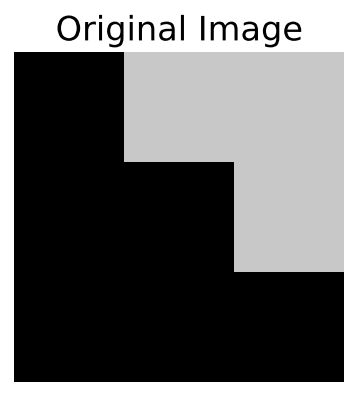
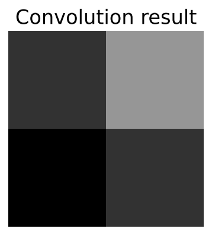
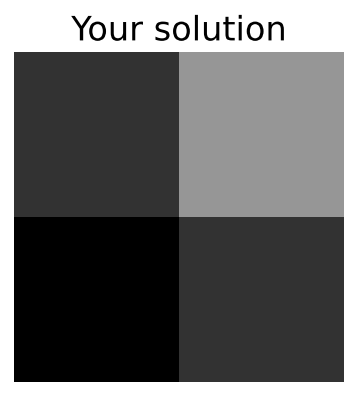

Tutorial 1: Introduction to CNNs
Contents


Tutorial 1: Introduction to CNNs¶
Week 2, Day 2: Convnets and DL Thinking
By Neuromatch Academy
Content creators: Dawn Estes McKnight, Richard Gerum, Cassidy Pirlot, Rohan Saha, Liam Peet-Pare, Saeed Najafi, Alona Fyshe
Content reviewers: Saeed Salehi, Lily Cheng, Yu-Fang Yang, Polina Turishcheva, Bettina Hein, Kelson Shilling-Scrivo
Content editors: Gagana B, Nina Kudryashova, Anmol Gupta, Xiaoxiong Lin, Spiros Chavlis
Production editors: Alex Tran-Van-Minh, Gagana B, Spiros Chavlis
Based on material from: Konrad Kording, Hmrishav Bandyopadhyay, Rahul Shekhar, Tejas Srivastava

Tutorial Objectives¶
At the end of this tutorial, we will be able to:
Define what convolution is
Implement convolution as an operation
In the Bonus materials of this tutorial, you will be able to:
Train a CNN by writing your own train loop
Recognize the symptoms of overfitting and how to cure them
Setup¶
Install dependencies¶
# @title Install dependencies
!pip install Pillow --quiet
!pip install git+https://github.com/NeuromatchAcademy/evaltools --quiet
from evaltools.airtable import AirtableForm
atform = AirtableForm('appn7VdPRseSoMXEG', 'W2D2_T1', 'https://portal.neuromatchacademy.org/api/redirect/to/9c55f6cb-cdf9-4429-ac1c-ec44fe64c303')
# Imports
import time
import torch
import scipy.signal
import numpy as np
import matplotlib.pyplot as plt
import torch.nn as nn
import torch.nn.functional as F
import torchvision.transforms as transforms
import torchvision.datasets as datasets
from torch.utils.data import DataLoader
from tqdm.notebook import tqdm, trange
from PIL import Image
Figure Settings¶
# @title Figure Settings
import ipywidgets as widgets # Interactive display
%matplotlib inline
%config InlineBackend.figure_format = 'retina'
plt.style.use("https://raw.githubusercontent.com/NeuromatchAcademy/content-creation/main/nma.mplstyle")
Helper functions¶
# @title Helper functions
from scipy.signal import correlate2d
import zipfile, gzip, shutil, tarfile
def download_data(fname, folder, url, tar):
"""
Data downloading from OSF.
Args:
fname : str
The name of the archive
folder : str
The name of the destination folder
url : str
The download url
tar : boolean
`tar=True` the archive is `fname`.tar.gz, `tar=False` is `fname`.zip
Returns:
Nothing.
"""
if not os.path.exists(folder):
print(f'\nDownloading {folder} dataset...')
r = requests.get(url, allow_redirects=True)
with open(fname, 'wb') as fh:
fh.write(r.content)
print(f'\nDownloading {folder} completed.')
print('\nExtracting the files...\n')
if not tar:
with zipfile.ZipFile(fname, 'r') as fz:
fz.extractall()
else:
with tarfile.open(fname) as ft:
ft.extractall()
# Remove the archive
os.remove(fname)
# Extract all .gz files
foldername = folder + '/raw/'
for filename in os.listdir(foldername):
# Remove the extension
fname = filename.replace('.gz', '')
# Gunzip all files
with gzip.open(foldername + filename, 'rb') as f_in:
with open(foldername + fname, 'wb') as f_out:
shutil.copyfileobj(f_in, f_out)
os.remove(foldername+filename)
else:
print(f'{folder} dataset has already been downloaded.\n')
def check_shape_function(func, image_shape, kernel_shape):
"""
Helper function to check shape implementation
Args:
func: f.__name__
Function name
image_shape: tuple
Image shape
kernel_shape: tuple
Kernel shape
Returns:
Nothing
"""
correct_shape = correlate2d(np.random.rand(*image_shape), np.random.rand(*kernel_shape), "valid").shape
user_shape = func(image_shape, kernel_shape)
if correct_shape != user_shape:
print(f"❌ Your calculated output shape is not correct.")
else:
print(f"✅ Output for image_shape: {image_shape} and kernel_shape: {kernel_shape}, output_shape: {user_shape}, is correct.")
def check_conv_function(func, image, kernel):
"""
Helper function to check conv_function
Args:
func: f.__name__
Function name
image: np.ndarray
Image matrix
kernel_shape: np.ndarray
Kernel matrix
Returns:
Nothing
"""
solution_user = func(image, kernel)
solution_scipy = correlate2d(image, kernel, "valid")
result_right = (solution_user == solution_scipy).all()
if result_right:
print("✅ The function calculated the convolution correctly.")
else:
print("❌ The function did not produce the right output.")
print("For the input matrix:")
print(image)
print("and the kernel:")
print(kernel)
print("the function returned:")
print(solution_user)
print("the correct output would be:")
print(solution_scipy)
def check_pooling_net(net, device='cpu'):
"""
Helper function to check pooling output
Args:
net: nn.module
Net instance
device: string
GPU/CUDA if available, CPU otherwise.
Returns:
Nothing
"""
x_img = emnist_train[x_img_idx][0].unsqueeze(dim=0).to(device)
output_x = net(x_img)
output_x = output_x.squeeze(dim=0).detach().cpu().numpy()
right_output = [
[0.000000, 0.000000, 0.000000, 0.000000, 0.000000, 0.000000, 0.000000,
0.000000, 0.000000, 0.000000, 0.000000, 0.000000],
[0.000000, 0.000000, 0.000000, 0.000000, 0.000000, 0.000000, 0.000000,
0.000000, 0.000000, 0.000000, 0.000000, 0.000000],
[9.309552, 1.6216984, 0.000000, 0.000000, 0.000000, 0.000000, 2.2708383,
2.6654134, 1.2271233, 0.000000, 0.000000, 0.000000],
[12.873457, 13.318945, 9.46229, 4.663746, 0.000000, 0.000000, 1.8889914,
0.31068993, 0.000000, 0.000000, 0.000000, 0.000000],
[0.000000, 8.354934, 10.378724, 16.882853, 18.499334, 4.8546696, 0.000000,
0.000000, 0.000000, 6.29296, 5.096506, 0.000000],
[0.000000, 0.000000, 0.31068993, 5.7074604, 9.984148, 4.12916, 8.10037,
7.667609, 0.000000, 0.000000, 1.2780352, 0.000000],
[0.000000, 2.436305, 3.9764223, 0.000000, 0.000000, 0.000000, 12.98801,
17.1756, 17.531992, 11.664275, 1.5453291, 0.000000],
[4.2691708, 2.3217516, 0.000000, 0.000000, 1.3798618, 0.05612564, 0.000000,
0.000000, 11.218788, 16.360992, 13.980816, 8.354935],
[1.8126211, 0.000000, 0.000000, 2.9199777, 3.9382377, 0.000000, 0.000000,
0.000000, 0.000000, 0.000000, 6.076582, 10.035061],
[0.000000, 0.92164516, 4.434638, 0.7816348, 0.000000, 0.000000, 0.000000,
0.000000, 0.000000, 0.000000, 0.000000, 0.83254766],
[0.000000, 0.000000, 0.000000, 0.000000, 0.000000, 0.000000, 0.000000,
0.000000, 0.000000, 0.000000, 0.000000, 0.000000],
[0.000000, 0.000000, 0.000000, 0.000000, 0.000000, 0.000000, 0.000000,
0.000000, 0.000000, 0.000000, 0.000000, 0.000000]
]
right_shape = (3, 12, 12)
if output_x.shape != right_shape:
print(f"❌ Your output does not have the right dimensions. Your output is {output_x.shape} the expected output is {right_shape}")
elif (output_x[0] != right_output).all():
print("❌ Your output is not right.")
else:
print("✅ Your network produced the correct output.")
# Just returns accuracy on test data
def test(model, device, data_loader):
"""
Test function
Args:
net: nn.module
Net instance
device: string
GPU/CUDA if available, CPU otherwise.
data_loader: torch.loader
Test loader
Returns:
acc: float
Test accuracy
"""
model.eval()
correct = 0
total = 0
for data in data_loader:
inputs, labels = data
inputs = inputs.to(device).float()
labels = labels.to(device).long()
outputs = model(inputs)
_, predicted = torch.max(outputs, 1)
total += labels.size(0)
correct += (predicted == labels).sum().item()
acc = 100 * correct / total
return f"{acc}%"
Plotting Functions¶
# @title Plotting Functions
def display_image_from_greyscale_array(matrix, title):
"""
Display image from greyscale array
Args:
matrix: np.ndarray
Image
title: string
Title of plot
Returns:
Nothing
"""
_matrix = matrix.astype(np.uint8)
_img = Image.fromarray(_matrix, 'L')
plt.figure(figsize=(3, 3))
plt.imshow(_img, cmap='gray', vmin=0, vmax=255) # Using 220 instead of 255 so the examples show up better
plt.title(title)
plt.axis('off')
def make_plots(original, actual_convolution, solution):
"""
Function to build original image/obtained solution and actual convolution
Args:
original: np.ndarray
Image
actual_convolution: np.ndarray
Expected convolution output
solution: np.ndarray
Obtained convolution output
Returns:
Nothing
"""
display_image_from_greyscale_array(original, "Original Image")
display_image_from_greyscale_array(actual_convolution, "Convolution result")
display_image_from_greyscale_array(solution, "Your solution")
def plot_loss_accuracy(train_loss, train_acc,
validation_loss, validation_acc):
"""
Code to plot loss and accuracy
Args:
train_loss: list
Log of training loss
validation_loss: list
Log of validation loss
train_acc: list
Log of training accuracy
validation_acc: list
Log of validation accuracy
Returns:
Nothing
"""
epochs = len(train_loss)
fig, (ax1, ax2) = plt.subplots(1, 2)
ax1.plot(list(range(epochs)), train_loss, label='Training Loss')
ax1.plot(list(range(epochs)), validation_loss, label='Validation Loss')
ax1.set_xlabel('Epochs')
ax1.set_ylabel('Loss')
ax1.set_title('Epoch vs Loss')
ax1.legend()
ax2.plot(list(range(epochs)), train_acc, label='Training Accuracy')
ax2.plot(list(range(epochs)), validation_acc, label='Validation Accuracy')
ax2.set_xlabel('Epochs')
ax2.set_ylabel('Accuracy')
ax2.set_title('Epoch vs Accuracy')
ax2.legend()
fig.set_size_inches(15.5, 5.5)
Set random seed¶
Executing set_seed(seed=seed) you are setting the seed
# @title Set random seed
# @markdown Executing `set_seed(seed=seed)` you are setting the seed
# For DL its critical to set the random seed so that students can have a
# baseline to compare their results to expected results.
# Read more here: https://pytorch.org/docs/stable/notes/randomness.html
# Call `set_seed` function in the exercises to ensure reproducibility.
import random
import torch
def set_seed(seed=None, seed_torch=True):
"""
Function that controls randomness.
NumPy and random modules must be imported.
Args:
seed : Integer
A non-negative integer that defines the random state. Default is `None`.
seed_torch : Boolean
If `True` sets the random seed for pytorch tensors, so pytorch module
must be imported. Default is `True`.
Returns:
Nothing.
"""
if seed is None:
seed = np.random.choice(2 ** 32)
random.seed(seed)
np.random.seed(seed)
if seed_torch:
torch.manual_seed(seed)
torch.cuda.manual_seed_all(seed)
torch.cuda.manual_seed(seed)
torch.backends.cudnn.benchmark = False
torch.backends.cudnn.deterministic = True
print(f'Random seed {seed} has been set.')
# In case that `DataLoader` is used
def seed_worker(worker_id):
"""
DataLoader will reseed workers following randomness in
multi-process data loading algorithm.
Args:
worker_id: integer
ID of subprocess to seed. 0 means that
the data will be loaded in the main process
Refer: https://pytorch.org/docs/stable/data.html#data-loading-randomness for more details
Returns:
Nothing
"""
worker_seed = torch.initial_seed() % 2**32
np.random.seed(worker_seed)
random.seed(worker_seed)
Set device (GPU or CPU). Execute set_device()¶
# @title Set device (GPU or CPU). Execute `set_device()`
# especially if torch modules used.
# Inform the user if the notebook uses GPU or CPU.
def set_device():
"""
Set the device. CUDA if available, CPU otherwise
Args:
None
Returns:
Nothing
"""
device = "cuda" if torch.cuda.is_available() else "cpu"
if device != "cuda":
print("WARNING: For this notebook to perform best, "
"if possible, in the menu under `Runtime` -> "
"`Change runtime type.` select `GPU` ")
else:
print("GPU is enabled in this notebook.")
return device
SEED = 2021
set_seed(seed=SEED)
DEVICE = set_device()
Random seed 2021 has been set.
WARNING: For this notebook to perform best, if possible, in the menu under `Runtime` -> `Change runtime type.` select `GPU`
Section 0: Recap the Experience from Last Week¶
Time estimate: ~15mins
Last week you learned a lot! Recall that overparametrized ANNs are efficient universal approximators, but also that ANNs can memorize our data. However, regularization can help ANNs to better generalize. You were introduced to several regularization techniques such as L1, L2, Data Augmentation, and Dropout.
Today we’ll be talking about other ways to simplify ANNs, by making smart changes to their architecture.
Video 1: Introduction to CNNs and RNNs¶
Think! 0: Regularization & effective number of params¶
Let’s think back to last week, when you learned about regularization. Recall that regularization comes in several forms. For example, L1 regularization adds a term to the loss function that penalizes based on the sum of the absolute magnitude of the weights. Below are the results from training a simple multilayer perceptron with one hidden layer (b) on a simple toy dataset (a).
Below that are two graphics that show the effect of regularization on both the number of non-zero weights (d), and on the network’s accuracy (c).
What do you notice?
Note: Dense layers are the same as fully-connected layers. And pytorch calls them linear layers. Confusing, but now you know!

Student Response¶
# @title Student Response
from ipywidgets import widgets
text=widgets.Textarea(
value='Type your answer here and click on `Submit!`',
placeholder='Type something',
description='',
disabled=False
)
button = widgets.Button(description="Submit!")
display(text,button)
def on_button_clicked(b):
atform.add_answer('q1', text.value)
print("Submission successful!")
button.on_click(on_button_clicked)
# to_remove explanation
"""
When you increase the regularization strength you can see that the test accuracy
improves (orange line in (c)),while the effective number of parameters goes down
(d).At a certain point, however, the regularization is too strong, and the
accuracy declines (1e-1).
""";
Coming Up
The rest of these lectures focus on another way to reduce parameters: weight-sharing. Weight-sharing is based on the idea that some sets of weights can be used at multiple points in a network. We will focus mostly on CNNs today, where the weight-sharing is across the 2D space of an image. At the end we will touch briefly on Recurrent Neural Networks (RNNs), which share parameters across time. Both of these weight-sharing techniques (across space and time) can reduce the number of parameters and increase a network’s ability to generalize.
Section 1: Neuroscience motivation, General CNN structure¶
Time estimate: ~25mins
Video 2: Representations & Visual processing in the brain¶
Think! 1: What makes a representation good?¶
Representations have a long and storied history, having been studied by the likes of Aristotle back in 300 BC! Representations are not a new idea, and they certainly don’t exist just in neural networks.
Take a moment with your pod to discuss what would make a good representation, and how that might differ depending on the task you train your CNN to do.
If there’s time, you can also consider how the brain’s representations might differ from a learned representation inside a NN.
Student Response¶
# @title Student Response
from ipywidgets import widgets
text=widgets.Textarea(
value='Type your answer here and click on `Submit!`',
placeholder='Type something',
description='',
disabled=False
)
button = widgets.Button(description="Submit!")
display(text,button)
def on_button_clicked(b):
atform.add_answer('q2', text.value)
print("Submission successful!")
button.on_click(on_button_clicked)
# to_remove explanation
"""
A good representation captures the important aspects of an entity - Using a good
representation, we can understand the nuances of the data - for example, a good
representation of an image showing a dog would accurately capture the eyes,
ears etc and a representation of, for example, a building, would capture the
edges.
""";
Section 2: Convolutions and Edge Detection¶
Time estimate: ~25mins
Fundamental to CNNs are convolutions. After all, that is what the C in CNN stands for! In this section, we will define what a convolution is, practice performing a convolution, and implement it in code.
Video 3: Details about Convolution¶
Before jumping into coding exercises, take a moment to look at this animation that steps through the process of convolution.
Recall from the video that convolution involves sliding the kernel across the image, taking the element-wise product, and adding those products together.

Adopted from A. Zhang, Z. C. Lipton, M. Li and A. J. Smola, Dive into Deep Learning.
Note: You need to run the cell to activate the sliders, and again to run once changing the sliders.
Tip: In this animation, and all the ones that follow, you can hover over the parts of the code underlined in red to change them.
Tip: Below, the function is called Conv2d because the convolutional filter is a matrix with two dimensions (2D). There are also 1D and 3D convolutions, but we won’t talk about them today.
Interactive Demo 2: Visualization of Convolution¶
Important: Change the bool variable run_demo to True by ticking the box, in order to experiment with the demo. Due to video rendering on jupyter-book, we had to remove it from the automatic execution.
Run this cell to enable the widget!
# @markdown *Run this cell to enable the widget!*
from IPython.display import HTML
id_html = 2
url = f'https://raw.githubusercontent.com/NeuromatchAcademy/course-content-dl/main/tutorials/W2D2_ConvnetsAndDlThinking/static/interactive_demo{id_html}.html'
run_demo = False # @param {type:"boolean"}
if run_demo:
display(HTML(url))
Definitional Note¶
If you have a background in signal processing or math, you may have already heard of convolution. However, the definitions in other domains and the one we use here are slightly different. The more common definition involves flipping the kernel horizontally and vertically before sliding.
For our purposes, no flipping is needed. If you are familiar with conventions involving flipping, just assume the kernel is pre-flipped.
In more general usage, the no-flip operation that we call convolution is known as cross-correlation (hence the usage of scipy.signal.correlate2d in the next exercise). Early papers used the more common definition of convolution, but not using a flip is easier to visualize, and in fact the lack of flip does not impact a CNN’s ability to learn.
Coding Exercise 2.1: Convolution of a Simple Kernel¶
At its core, convolution is just repeatedly multiplying a matrix, known as a kernel or filter, with some other, larger matrix (in our case the pixels of an image). Consider the below image and kernel:
Perform (by hand) the operations needed to convolve the kernel and image above. Afterwards enter your results in the “solution” section in the code below. Think about what this specific kernel is doing to the original image.
def conv_check():
"""
Demonstration of convolution operation
Args:
None
Returns:
original: np.ndarray
Image
actual_convolution: np.ndarray
Expected convolution output
solution: np.ndarray
Obtained convolution output
kernel: np.ndarray
Kernel
"""
####################################################################
# Fill in missing code below (the elements of the matrix),
# then remove or comment the line below to test your function
raise NotImplementedError("Fill in the solution matrix, then delete this")
####################################################################
# Write the solution array and call the function to verify it!
solution = ...
original = np.array([
[0, 200, 200],
[0, 0, 200],
[0, 0, 0]
])
kernel = np.array([
[0.25, 0.25],
[0.25, 0.25]
])
actual_convolution = scipy.signal.correlate2d(original, kernel, mode="valid")
if (solution == actual_convolution).all():
print("✅ Your solution is correct!\n")
else:
print("❌ Your solution is incorrect.\n")
return original, kernel, actual_convolution, solution
# Add event to airtable
atform.add_event('Coding Exercise 2.1: Convolution of a Simple Kernel')
## Uncomment to test your solution!
# original, kernel, actual_convolution, solution = conv_check()
# make_plots(original, actual_convolution, solution)
# to_remove solution
def conv_check():
"""
Demonstration of convolution operation
Args:
None
Returns:
original: np.ndarray
Image
actual_convolution: np.ndarray
Expected convolution output
solution: np.ndarray
Obtained convolution output
kernel: np.ndarray
Kernel
"""
# Write the solution array and call the function to verify it!
solution = np.array([
[50, 150],
[0, 50]
])
original = np.array([
[0, 200, 200],
[0, 0, 200],
[0, 0, 0]
])
kernel = np.array([
[0.25, 0.25],
[0.25, 0.25]
])
actual_convolution = scipy.signal.correlate2d(original, kernel, mode="valid")
if (solution == actual_convolution).all():
print("✅ Your solution is correct!\n")
else:
print("❌ Your solution is incorrect.\n")
return original, kernel, actual_convolution, solution
# Add event to airtable
atform.add_event('Coding Exercise 2.1: Convolution of a Simple Kernel')
## Uncomment to test your solution!
original, kernel, actual_convolution, solution = conv_check()
with plt.xkcd():
make_plots(original, actual_convolution, solution)
✅ Your solution is correct!



Coding Exercise 2.2: Convolution Output Size¶
Now, you have manually calculated a convolution. How did this change the shape of the output? When you know the shapes of the input matrix and kernel, what is the shape of the output?
Hint: If you have problems figuring out what the output shape should look like, go back to the visualisation and see how the output shape changes as you modify the image and kernel size.
def calculate_output_shape(image_shape, kernel_shape):
"""
Helper function to calculate output shape
Args:
image_shape: tuple
Image shape
kernel_shape: tuple
Kernel shape
Returns:
output_height: int
Output Height
output_width: int
Output Width
"""
image_height, image_width = image_shape
kernel_height, kernel_width = kernel_shape
####################################################################
# Fill in missing code below, then remove or comment the line below to test your function
raise NotImplementedError("Fill in the lines below, then delete this")
####################################################################
output_height = ...
output_width = ...
return output_height, output_width
# Add event to airtable
atform.add_event('Coding Exercise 2.2: Convolution Output Size')
# Here we check if your function works correcly by applying it to different image
# and kernel shapes
# check_shape_function(calculate_output_shape, image_shape=(3, 3), kernel_shape=(2, 2))
# check_shape_function(calculate_output_shape, image_shape=(3, 4), kernel_shape=(2, 3))
# check_shape_function(calculate_output_shape, image_shape=(5, 5), kernel_shape=(5, 5))
# check_shape_function(calculate_output_shape, image_shape=(10, 20), kernel_shape=(3, 2))
# check_shape_function(calculate_output_shape, image_shape=(100, 200), kernel_shape=(40, 30))
# to_remove solution
def calculate_output_shape(image_shape, kernel_shape):
"""
Helper function to calculate output shape
Args:
image_shape: tuple
Image shape
kernel_shape: tuple
Kernel shape
Returns:
output_height: int
Output Height
output_width: int
Output Width
"""
image_height, image_width = image_shape
kernel_height, kernel_width = kernel_shape
output_height = image_height - kernel_height + 1
output_width = image_width - kernel_width + 1
return output_height, output_width
# Add event to airtable
atform.add_event('Coding Exercise 2.2: Convolution Output Size')
# Here we check if your function works correcly by applying it to different image
# and kernel shapes
check_shape_function(calculate_output_shape, image_shape=(3, 3), kernel_shape=(2, 2))
check_shape_function(calculate_output_shape, image_shape=(3, 4), kernel_shape=(2, 3))
check_shape_function(calculate_output_shape, image_shape=(5, 5), kernel_shape=(5, 5))
check_shape_function(calculate_output_shape, image_shape=(10, 20), kernel_shape=(3, 2))
check_shape_function(calculate_output_shape, image_shape=(100, 200), kernel_shape=(40, 30))
✅ Output for image_shape: (3, 3) and kernel_shape: (2, 2), output_shape: (2, 2), is correct.
✅ Output for image_shape: (3, 4) and kernel_shape: (2, 3), output_shape: (2, 2), is correct.
✅ Output for image_shape: (5, 5) and kernel_shape: (5, 5), output_shape: (1, 1), is correct.
✅ Output for image_shape: (10, 20) and kernel_shape: (3, 2), output_shape: (8, 19), is correct.
✅ Output for image_shape: (100, 200) and kernel_shape: (40, 30), output_shape: (61, 171), is correct.
Coding Exercise 2.3: Coding a Convolution¶
Here, we have the skeleton of a function that performs convolution using the provided image and kernel matrices.
Exercise: Fill in the missing lines of code. You can test your function by uncommenting the sections beneath it.
Note: in more general situations, once you understand convolutions, you can use functions already available in pytorch/numpy to perform convolution (such as scipy.signal.correlate2d or scipy.signal.convolve2d).
def convolution2d(image, kernel):
"""
Convolves a 2D image matrix with a kernel matrix.
Args:
image: np.ndarray
Image
kernel: np.ndarray
Kernel
Returns:
output: np.ndarray
Output of convolution
"""
# Get the height/width of the image, kernel, and output
im_h, im_w = image.shape
ker_h, ker_w = kernel.shape
out_h = im_h - ker_h + 1
out_w = im_w - ker_w + 1
# Create an empty matrix in which to store the output
output = np.zeros((out_h, out_w))
# Iterate over the different positions at which to apply the kernel,
# storing the results in the output matrix
for out_row in range(out_h):
for out_col in range(out_w):
# Overlay the kernel on part of the image
# (multiply each element of the kernel with some element of the image, then sum)
# to determine the output of the matrix at a point
current_product = 0
for i in range(ker_h):
for j in range(ker_w):
####################################################################
# Fill in missing code below (...),
# then remove or comment the line below to test your function
raise NotImplementedError("Implement the convolution function")
####################################################################
current_product += ...
output[out_row, out_col] = current_product
return output
# Add event to airtable
atform.add_event('Coding Exercise 2.3: Coding a Convolution')
## Tests
# First, we test the parameters we used before in the manual-calculation example
image = np.array([[0, 200, 200], [0, 0, 200], [0, 0, 0]])
kernel = np.array([[0.25, 0.25], [0.25, 0.25]])
# check_conv_function(convolution2d, image, kernel)
# Next, we test with a different input and kernel (the numbers 1-9 and 1-4)
image = np.arange(9).reshape(3, 3)
kernel = np.arange(4).reshape(2, 2)
# check_conv_function(convolution2d, image, kernel)
# to_remove_solution
def convolution2d(image, kernel):
"""
Convolves a 2D image matrix with a kernel matrix.
Args:
image: np.ndarray
Image
kernel: np.ndarray
Kernel
Returns:
output: np.ndarray
Output of convolution
"""
# Get the height/width of the image, kernel, and output
im_h, im_w = image.shape
ker_h, ker_w = kernel.shape
out_h = im_h - ker_h + 1
out_w = im_w - ker_w + 1
# Create an empty matrix in which to store the output
output = np.zeros((out_h, out_w))
# Iterate over the different positions at which to apply the kernel,
# storing the results in the output matrix
for out_row in range(out_h):
for out_col in range(out_w):
# Overlay the kernel on part of the image
# (multiply each element of the kernel with some element of the image, then sum)
# to determine the output of the matrix at a point
current_product = 0
for i in range(ker_h):
for j in range(ker_w):
current_product += image[out_row + i, out_col + j] * kernel[i, j]
output[out_row, out_col] = current_product
return output
# Add event to airtable
atform.add_event('Coding Exercise 2.3: Coding a Convolution')
## Tests
# First, we test the parameters we used before in the manual-calculation example
image = np.array([[0, 200, 200], [0, 0, 200], [0, 0, 0]])
kernel = np.array([[0.25, 0.25], [0.25, 0.25]])
check_conv_function(convolution2d, image, kernel)
# Next, we test with a different input and kernel (the numbers 1-9 and 1-4)
image = np.arange(9).reshape(3, 3)
kernel = np.arange(4).reshape(2, 2)
check_conv_function(convolution2d, image, kernel)
✅ The function calculated the convolution correctly.
✅ The function calculated the convolution correctly.
Convolution on the Chicago Skyline¶
After you have finished programming the above convolution function, run the coding cell below, which applies two different kernels to a greyscale picture of Chicago and takes the geometric average of the results.
Make sure you remove all print statements from your convolution2d implementation, or this will run for a very long time. It should take somewhere between 10 seconds and 1 minute.
Load images (run me)¶
# @markdown ### Load images (run me)
import requests, os
if not os.path.exists('images/'):
os.mkdir('images/')
url = "https://raw.githubusercontent.com/NeuromatchAcademy/course-content-dl/main/tutorials/W2D2_ConvnetsAndDlThinking/static/chicago_skyline_shrunk_v2.bmp"
r = requests.get(url, allow_redirects=True)
with open("images/chicago_skyline_shrunk_v2.bmp", 'wb') as fd:
fd.write(r.content)
# Visualize the output of your function
from IPython.display import display as IPydisplay
with open("images/chicago_skyline_shrunk_v2.bmp", 'rb') as skyline_image_file:
img_skyline_orig = Image.open(skyline_image_file)
img_skyline_mat = np.asarray(img_skyline_orig)
kernel_ver = np.array([[-1, 0, 1], [-2, 0, 2], [-1, 0, 1]])
kernel_hor = np.array([[-1, 0, 1], [-2, 0, 2], [-1, 0, 1]]).T
img_processed_mat_ver = convolution2d(img_skyline_mat, kernel_ver)
img_processed_mat_hor = convolution2d(img_skyline_mat, kernel_hor)
img_processed_mat = np.sqrt(np.multiply(img_processed_mat_ver,
img_processed_mat_ver) + \
np.multiply(img_processed_mat_hor,
img_processed_mat_hor))
img_processed_mat *= 255.0/img_processed_mat.max()
img_processed_mat = img_processed_mat.astype(np.uint8)
img_processed = Image.fromarray(img_processed_mat, 'L')
width, height = img_skyline_orig.size
scale = 0.6
IPydisplay(img_skyline_orig.resize((int(width*scale), int(height*scale))),
Image.NEAREST)
IPydisplay(img_processed.resize((int(width*scale), int(height*scale))),
Image.NEAREST)
---------------------------------------------------------------------------
KeyboardInterrupt Traceback (most recent call last)
/tmp/ipykernel_11942/644241346.py in <module>
8 kernel_hor = np.array([[-1, 0, 1], [-2, 0, 2], [-1, 0, 1]]).T
9 img_processed_mat_ver = convolution2d(img_skyline_mat, kernel_ver)
---> 10 img_processed_mat_hor = convolution2d(img_skyline_mat, kernel_hor)
11 img_processed_mat = np.sqrt(np.multiply(img_processed_mat_ver,
12 img_processed_mat_ver) + \
/tmp/ipykernel_11942/631294496.py in convolution2d(image, kernel)
33 for i in range(ker_h):
34 for j in range(ker_w):
---> 35 current_product += image[out_row + i, out_col + j] * kernel[i, j]
36
37 output[out_row, out_col] = current_product
KeyboardInterrupt:
Pretty cool, right? We will go into more detail on what’s happening in the next section.
Section 2.1: Demonstration of a CNN in PyTorch¶
At this point, you should have a fair idea of how to perform a convolution on an image given a kernel. In the following cell, we provide a code snippet that demonstrates setting up a convolutional network using PyTorch.
We look at the nn module in PyTorch. The nn module contains a plethora of functions that will make implementing a neural network easier. In particular we will look at the nn.Conv2d() function, which creates a convolutional layer that is applied to whatever image that you feed the resulting network.
Look at the code below. In it, we define a Net class that you can instantiate with a kernel to create a Neural Network object. When you apply the network object to an image (or anything in the form of a matrix), it convolves the kernel over that image.
class Net(nn.Module):
"""
A convolutional neural network class.
When an instance of it is constructed with a kernel, you can apply that instance
to a matrix and it will convolve the kernel over that image.
i.e. Net(kernel)(image)
"""
def __init__(self, kernel=None, padding=0):
super(Net, self).__init__()
"""
Summary of the nn.conv2d parameters (you can also get this by hovering
over the method):
- in_channels (int): Number of channels in the input image
- out_channels (int): Number of channels produced by the convolution
- kernel_size (int or tuple): Size of the convolving kernel
Args:
padding: int or tuple, optional
Zero-padding added to both sides of the input. Default: 0
kernel: np.ndarray
Convolving kernel. Default: None
Returns:
Nothing
"""
self.conv1 = nn.Conv2d(in_channels=1, out_channels=1, kernel_size=2,
padding=padding)
# Set up a default kernel if a default one isn't provided
if kernel is not None:
dim1, dim2 = kernel.shape[0], kernel.shape[1]
kernel = kernel.reshape(1, 1, dim1, dim2)
self.conv1.weight = torch.nn.Parameter(kernel)
self.conv1.bias = torch.nn.Parameter(torch.zeros_like(self.conv1.bias))
def forward(self, x):
"""
Forward Pass of nn.conv2d
Args:
x: torch.tensor
Input features
Returns:
x: torch.tensor
Convolution output
"""
x = self.conv1(x)
return x
# Format a default 2x2 kernel of numbers from 0 through 3
kernel = torch.Tensor(np.arange(4).reshape(2, 2))
# Prepare the network with that default kernel
net = Net(kernel=kernel, padding=0).to(DEVICE)
# Set up a 3x3 image matrix of numbers from 0 through 8
image = torch.Tensor(np.arange(9).reshape(3, 3))
image = image.reshape(1, 1, 3, 3).to(DEVICE) # BatchSize X Channels X Height X Width
print("Image:\n" + str(image))
print("Kernel:\n" + str(kernel))
output = net(image) # Apply the convolution
print("Output:\n" + str(output))
As a quick aside, notice the difference in the input and output size. The input had a size of 3×3, and the output is of size 2×2. This is because of the fact that the kernel can’t produce values for the edges of the image - when it slides to an end of the image and is centered on a border pixel, it overlaps space outside of the image that is undefined. If we don’t want to lose that information, we will have to pad the image with some defaults (such as 0s) on the border. This process is, somewhat predictably, called padding. We will talk more about padding in the next section.
print("Image (before padding):\n" + str(image))
print("Kernel:\n" + str(kernel))
# Prepare the network with the aforementioned default kernel, but this
# time with padding
net = Net(kernel=kernel, padding=1).to(DEVICE)
output = net(image) # Apply the convolution onto the padded image
print("Output:\n" + str(output))
Section 2.2: Padding and Edge Detection¶
Before we start in on the exercises, here’s a visualization to help you think about padding.
Interactive Demo 2.2: Visualization of Convolution with Padding and Stride¶
Recall that
Padding adds rows and columns of zeros to the outside edge of an image
Stride length adjusts the distance by which a filter is shifted after each convolution.
Change the padding and stride and see how this affects the shape of the output. How does the padding need to be configured to maintain the shape of the input?
Important: Change the bool variable run_demo to True by ticking the box, in order to experiment with the demo. Due to video rendering on jupyter-book, we had to remove it from the automatic execution.
Run this cell to enable the widget!
# @markdown *Run this cell to enable the widget!*
from IPython.display import HTML
id_html = 2.2
url = f'https://raw.githubusercontent.com/NeuromatchAcademy/course-content-dl/main/tutorials/W2D2_ConvnetsAndDlThinking/static/interactive_demo{id_html}.html'
run_demo = False # @param {type:"boolean"}
if run_demo:
display(HTML(url))
Think! 2.2.1: Edge Detection¶
One of the simpler tasks performed by a convolutional layer is edge detection; that is, finding a place in the image where there is a large and abrupt change in color. Edge-detecting filters are usually learned by the first layers in a CNN. Observe the following simple kernel and discuss whether this will detect vertical edges (where the trace of the edge is vertical; i.e. there is a boundary between left and right), or whether it will detect horizontal edges (where the trace of the edge is horizontal; i.e., there is a boundary between top and bottom).
Student Response¶
# @title Student Response
from ipywidgets import widgets
text=widgets.Textarea(
value='Type your answer here and click on `Submit!`',
placeholder='Type something',
description='',
disabled=False
)
button = widgets.Button(description="Submit!")
display(text, button)
def on_button_clicked(b):
atform.add_answer('q3', text.value)
print("Submission successful!")
button.on_click(on_button_clicked)
# to_remove explanation
"""
It will detect vertical edges.
Consider a part of the image where values on the left are high and values on the
right are low. In this case, applying the kernel, the high values will be
maintained and the low values will be inverted, yielding a very-positive sum.
Now reverse the situation - values on the left are low and values on the right
are high. In this case, applying the kernel, the low values will be maintained
and the high values will be inverted, yielding a very-negative sum.
In any situation on the image where the left and right sides of a 2x2 block
/aren't/ much different, applying the kernel will result in decent degree of
cancellation - i.e. if it's all, say, 5, (5 + -5 + 5 + -5) = 0.
In other words, the only situations where you'll have an extremely positive or
extremely negative score are when you have a high value on either the left/right
and a low value on the other side.
""";
Consider the image below, which has a black vertical stripe with white on the side. This is like a very zoomed-in vertical edge within an image!
# Prepare an image that's basically just a vertical black stripe
X = np.ones((6, 8))
X[:, 2:6] = 0
print(X)
plt.imshow(X, cmap=plt.get_cmap('gray'))
plt.show()
# Format the image that's basically just a vertical stripe
image = torch.from_numpy(X)
image = image.reshape(1, 1, 6, 8) # BatchSize X Channels X Height X Width
# Prepare a 2x2 kernel with 1s in the first column and -1s in the
# This exact kernel was discussed above!
kernel = torch.Tensor([[1.0, -1.0], [1.0, -1.0]])
net = Net(kernel=kernel)
# Apply the kernel to the image and prepare for display
processed_image = net(image.float())
processed_image = processed_image.reshape(5, 7).detach().numpy()
print(processed_image)
plt.imshow(processed_image, cmap=plt.get_cmap('gray'))
plt.show()
As you can see, this kernel detects vertical edges (the black stripe corresponds to a highly positive result, while the white stripe corresponds to a highly negative result. However, to display the image, all the pixels are normalized between 0=black and 1=white).
Think! 2.2.2 Kernel structure¶
If the kernel were transposed (i.e., the columns become rows and the rows become columns), what would the kernel detect? What would be produced by running this kernel on the vertical edge image above?
Student Response¶
# @title Student Response
from ipywidgets import widgets
text=widgets.Textarea(
value='Type your answer here and click on `Submit!`',
placeholder='Type something',
description='',
disabled=False
)
button = widgets.Button(description="Submit!")
display(text,button)
def on_button_clicked(b):
atform.add_answer('q4', text.value)
print("Submission successful!")
button.on_click(on_button_clicked)
# to_remove explanation
"""
If the kernel were transposed, it would detect horizontal edges.
Running it on the vertical edge would result in 0s - you'd have no change
going from top to bottom, so you'd be adding and subtracting the same value.
(If you're confused as to why this shows up as black, rather than gray,
it's because of how the image is normalized)
""";
Section 3: Pooling and Subsampling¶
Time estimate: ~50mins
Video 4: Pooling¶
To visualize the various components of a CNN, we will build a simple CNN step by step. Recall that the MNIST dataset consists of binarized images of handwritten digits. This time, we will use the EMNIST letters dataset, which consists of binarized images of handwritten characters \((A, ..., Z)\).
We will simplify the problem further by only keeping the images that correspond to \(X\) (labeled as 24 in the dataset) and \(O\) (labeled as 15 in the dataset). Then, we will train a CNN to classify an image either an \(X\) or an \(O\).
Download EMNIST dataset¶
,,# @title Download EMNIST dataset
# webpage: https://www.itl.nist.gov/iaui/vip/cs_links/EMNIST/gzip.zip
fname = 'EMNIST.zip'
folder = 'EMNIST'
url = "https://osf.io/xwfaj/download"
download_data(fname, folder, url, tar=False)
Dataset/DataLoader Functions (Run me!)¶
# @title Dataset/DataLoader Functions *(Run me!)*
def get_Xvs0_dataset(normalize=False, download=False):
"""
Load Dataset
Args:
normalize: boolean
If true, normalise dataloader
download: boolean
If true, download dataset
Returns:
emnist_train: torch.loader
Training Data
emnist_test: torch.loader
Test Data
"""
if normalize:
transform = transforms.Compose([
transforms.ToTensor(),
transforms.Normalize((0.1307,), (0.3081,))
])
else:
transform = transforms.Compose([
transforms.ToTensor(),
])
emnist_train = datasets.EMNIST(root='.',
split='letters',
download=download,
train=True,
transform=transform)
emnist_test = datasets.EMNIST(root='.',
split='letters',
download=download,
train=False,
transform=transform)
# Only want O (15) and X (24) labels
train_idx = (emnist_train.targets == 15) | (emnist_train.targets == 24)
emnist_train.targets = emnist_train.targets[train_idx]
emnist_train.data = emnist_train.data[train_idx]
# Convert Xs predictions to 1, Os predictions to 0
emnist_train.targets = (emnist_train.targets == 24).type(torch.int64)
test_idx = (emnist_test.targets == 15) | (emnist_test.targets == 24)
emnist_test.targets = emnist_test.targets[test_idx]
emnist_test.data = emnist_test.data[test_idx]
# Convert Xs predictions to 1, Os predictions to 0
emnist_test.targets = (emnist_test.targets == 24).type(torch.int64)
return emnist_train, emnist_test
def get_data_loaders(train_dataset, test_dataset,
batch_size=32, seed=0):
"""
Helper function to fetch dataloaders
Args:
train_dataset: torch.tensor
Training data
test_dataset: torch.tensor
Test data
batch_size: int
Batch Size
seed: int
Set seed for reproducibility
Returns:
emnist_train: torch.loader
Training Data
emnist_test: torch.loader
Test Data
"""
g_seed = torch.Generator()
g_seed.manual_seed(seed)
train_loader = DataLoader(train_dataset,
batch_size=batch_size,
shuffle=True,
num_workers=2,
worker_init_fn=seed_worker,
generator=g_seed)
test_loader = DataLoader(test_dataset,
batch_size=batch_size,
shuffle=True,
num_workers=2,
worker_init_fn=seed_worker,
generator=g_seed)
return train_loader, test_loader
emnist_train, emnist_test = get_Xvs0_dataset(normalize=False, download=False)
train_loader, test_loader = get_data_loaders(emnist_train, emnist_test,
seed=SEED)
# Index of an image in the dataset that corresponds to an X and O
x_img_idx = 4
o_img_idx = 15
Let’s view a couple samples from the dataset.
fig, (ax1, ax2, ax3, ax4) = plt.subplots(1, 4, figsize=(12, 6))
ax1.imshow(emnist_train[0][0].reshape(28, 28), cmap='gray')
ax2.imshow(emnist_train[10][0].reshape(28, 28), cmap='gray')
ax3.imshow(emnist_train[4][0].reshape(28, 28), cmap='gray')
ax4.imshow(emnist_train[6][0].reshape(28, 28), cmap='gray')
plt.show()
Interactive Demo 3: Visualization of Convolution with Multiple Filters¶
Change the number of input channels (e.g., the color channels of an image or the output channels of a previous layer) and the output channels (number of different filters to apply).
Important: Change the bool variable run_demo to True by ticking the box, in order to experiment with the demo. Due to video rendering on jupyter-book, we had to remove it from the automatic execution.
Run this cell to enable the widget!
# @markdown *Run this cell to enable the widget!*
from IPython.display import HTML
id_html = 3
url = f'https://raw.githubusercontent.com/NeuromatchAcademy/course-content-dl/main/tutorials/W2D2_ConvnetsAndDlThinking/static/interactive_demo{id_html}.html'
run_demo = False # @param {type:"boolean"}
if run_demo:
display(HTML(url))
Section 3.1: Multiple Filters¶
The following network sets up 3 filters and runs them on an image of the dataset from the \(X\) class. Note that we are using “thicker” filters than those presented in the videos. Here, the filters are \(5 \times 5\), whereas in the videos \(3 \times 3\).
class Net2(nn.Module):
"""
Neural Network instance
"""
def __init__(self, padding=0):
"""
Initialize parameters of Net2
Args:
padding: int or tuple, optional
Zero-padding added to both sides of the input. Default: 0
Returns:
Nothing
"""
super(Net2, self).__init__()
self.conv1 = nn.Conv2d(in_channels=1, out_channels=3, kernel_size=5,
padding=padding)
# First kernel - leading diagonal
kernel_1 = torch.Tensor([[[1., 1., -1., -1., -1.],
[1., 1., 1., -1., -1.],
[-1., 1., 1., 1., -1.],
[-1., -1., 1., 1., 1.],
[-1., -1., -1., 1., 1.]]])
# Second kernel - other diagonal
kernel_2 = torch.Tensor([[[-1., -1., -1., 1., 1.],
[-1., -1., 1., 1., 1.],
[-1., 1., 1., 1., -1.],
[1., 1., 1., -1., -1.],
[1., 1., -1., -1., -1.]]])
# tThird kernel - checkerboard pattern
kernel_3 = torch.Tensor([[[1., 1., -1., 1., 1.],
[1., 1., 1., 1., 1.],
[-1., 1., 1., 1., -1.],
[1., 1., 1., 1., 1.],
[1., 1., -1., 1., 1.]]])
# Stack all kernels in one tensor with (3, 1, 5, 5) dimensions
multiple_kernels = torch.stack([kernel_1, kernel_2, kernel_3], dim=0)
self.conv1.weight = torch.nn.Parameter(multiple_kernels)
# Negative bias
self.conv1.bias = torch.nn.Parameter(torch.Tensor([-4, -4, -12]))
def forward(self, x):
"""
Forward Pass of Net2
Args:
x: torch.tensor
Input features
Returns:
x: torch.tensor
Convolution output
"""
x = self.conv1(x)
return x
Note: We add a negative bias to give a threshold to select the high output value, which corresponds to the features we want to detect (e.g., 45 degree oriented bar).
Now, let’s visualize the filters using the code given below.
net2 = Net2().to(DEVICE)
fig, (ax11, ax12, ax13) = plt.subplots(1, 3)
# Show the filters
ax11.set_title("filter 1")
ax11.imshow(net2.conv1.weight[0, 0].detach().cpu().numpy(), cmap="gray")
ax12.set_title("filter 2")
ax12.imshow(net2.conv1.weight[1, 0].detach().cpu().numpy(), cmap="gray")
ax13.set_title("filter 3")
ax13.imshow(net2.conv1.weight[2, 0].detach().cpu().numpy(), cmap="gray")
Think! 3.1: Do you see how these filters would help recognize an X?¶
Student Response¶
# @title Student Response
from ipywidgets import widgets
text=widgets.Textarea(
value='Type your answer here and click on `Submit!`',
placeholder='Type something',
description='',
disabled=False
)
button = widgets.Button(description="Submit!")
display(text,button)
def on_button_clicked(b):
atform.add_answer('q5', text.value)
print("Submission successful!")
button.on_click(on_button_clicked)
# to_remove explanation
"""
These filters are tailored to have strong responses to the features of an X and
weaker responses to the features of an O. The diagonal edge filters emphasize
the diagonal edges of the X and the checkerboard pattern reacts strongly to the
center of the X, while the more round edges of the O evoke weaker responses.
So the images which have strong downward (filter 1) and upward diagonals
(filter 3), as well as an intersection of both (filter 2) are probably an X.
""";
We apply the filters to the images.
net2 = Net2().to(DEVICE)
x_img = emnist_train[x_img_idx][0].unsqueeze(dim=0).to(DEVICE)
output_x = net2(x_img)
output_x = output_x.squeeze(dim=0).detach().cpu().numpy()
o_img = emnist_train[o_img_idx][0].unsqueeze(dim=0).to(DEVICE)
output_o = net2(o_img)
output_o = output_o.squeeze(dim=0).detach().cpu().numpy()
Let us view the image of \(X\) and \(O\) and what the output of the filters applied to them looks like. Pay special attention to the areas with very high vs. very low output patterns.
fig, ((ax11, ax12, ax13, ax14),
(ax21, ax22, ax23, ax24),
(ax31, ax32, ax33, ax34)) = plt.subplots(3, 4)
# Show the filters
ax11.axis("off")
ax12.set_title("filter 1")
ax12.imshow(net2.conv1.weight[0, 0].detach().cpu().numpy(), cmap="gray")
ax13.set_title("filter 2")
ax13.imshow(net2.conv1.weight[1, 0].detach().cpu().numpy(), cmap="gray")
ax14.set_title("filter 3")
ax14.imshow(net2.conv1.weight[2, 0].detach().cpu().numpy(), cmap="gray")
vmin, vmax = -6, 10
# Show x and the filters applied to x
ax21.set_title("image x")
ax21.imshow(emnist_train[x_img_idx][0].reshape(28, 28), cmap='gray')
ax22.set_title("output filter 1")
ax22.imshow(output_x[0], cmap='gray', vmin=vmin, vmax=vmax)
ax23.set_title("output filter 2")
ax23.imshow(output_x[1], cmap='gray', vmin=vmin, vmax=vmax)
ax24.set_title("output filter 3")
ax24.imshow(output_x[2], cmap='gray', vmin=vmin, vmax=vmax)
# Show o and the filters applied to o
ax31.set_title("image o")
ax31.imshow(emnist_train[o_img_idx][0].reshape(28, 28), cmap='gray')
ax32.set_title("output filter 1")
ax32.imshow(output_o[0], cmap='gray', vmin=vmin, vmax=vmax)
ax33.set_title("output filter 2")
ax33.imshow(output_o[1], cmap='gray', vmin=vmin, vmax=vmax)
ax34.set_title("output filter 3")
ax34.imshow(output_o[2], cmap='gray', vmin=vmin, vmax=vmax)
plt.show()
Section 3.2: ReLU after convolutions¶
Up until now we’ve talked about the convolution operation, which is linear. But the real strength of neural networks comes from the incorporation of non-linear functions. Furthermore, in the real world, we often have learning problems where the relationship between the input and output is non-linear and complex.
The ReLU (Rectified Linear Unit) introduces non-linearity into our model, allowing us to learn a more complex function that can better predict the class of an image.
The ReLU function is shown below.

Now let us incorporate ReLU into our previous model and visualize the output.
class Net3(nn.Module):
"""
Neural Network Instance
"""
def __init__(self, padding=0):
"""
Initialize Net3 parameters
Args:
padding: int or tuple, optional
Zero-padding added to both sides of the input. Default: 0
Returns:
Nothing
"""
super(Net3, self).__init__()
self.conv1 = nn.Conv2d(in_channels=1, out_channels=3, kernel_size=5,
padding=padding)
# First kernel - leading diagonal
kernel_1 = torch.Tensor([[[1., 1., -1., -1., -1.],
[1., 1., 1., -1., -1.],
[-1., 1., 1., 1., -1.],
[-1., -1., 1., 1., 1.],
[-1., -1., -1., 1., 1.]]])
# Second kernel - other diagonal
kernel_2 = torch.Tensor([[[-1., -1., -1., 1., 1.],
[-1., -1., 1., 1., 1.],
[-1., 1., 1., 1., -1.],
[1., 1., 1., -1., -1.],
[1., 1., -1., -1., -1.]]])
# Third kernel -checkerboard pattern
kernel_3 = torch.Tensor([[[1., 1., -1., 1., 1.],
[1., 1., 1., 1., 1.],
[-1., 1., 1., 1., -1.],
[1., 1., 1., 1., 1.],
[1., 1., -1., 1., 1.]]])
# Stack all kernels in one tensor with (3, 1, 5, 5) dimensions
multiple_kernels = torch.stack([kernel_1, kernel_2, kernel_3], dim=0)
self.conv1.weight = torch.nn.Parameter(multiple_kernels)
# Negative bias
self.conv1.bias = torch.nn.Parameter(torch.Tensor([-4, -4, -12]))
def forward(self, x):
"""
Forward Pass of Net3
Args:
x: torch.tensor
Input features
Returns:
x: torch.tensor
Convolution output
"""
x = self.conv1(x)
x = F.relu(x)
return x
We apply the filters and relus to the images.
net3 = Net3().to(DEVICE)
x_img = emnist_train[x_img_idx][0].unsqueeze(dim=0).to(DEVICE)
output_x_relu = net3(x_img)
output_x_relu = output_x_relu.squeeze(dim=0).detach().cpu().numpy()
o_img = emnist_train[o_img_idx][0].unsqueeze(dim=0).to(DEVICE)
output_o_relu = net3(o_img)
output_o_relu = output_o_relu.squeeze(dim=0).detach().cpu().numpy()
Let us view the image of \(X\) and \(O\) and what the output of the filters applied to them look like.
Execute this cell to view the filtered images
# @markdown *Execute this cell to view the filtered images*
fig, ((ax11, ax12, ax13, ax14, ax15, ax16, ax17),
(ax21, ax22, ax23, ax24, ax25, ax26, ax27),
(ax31, ax32, ax33, ax34, ax35, ax36, ax37)) = plt.subplots(3, 4 + 3,
figsize=(14, 6))
# Show the filters
ax11.axis("off")
ax12.set_title("filter 1")
ax12.imshow(net3.conv1.weight[0, 0].detach().cpu().numpy(), cmap="gray")
ax13.set_title("filter 2")
ax13.imshow(net3.conv1.weight[1, 0].detach().cpu().numpy(), cmap="gray")
ax14.set_title("filter 3")
ax14.imshow(net3.conv1.weight[2, 0].detach().cpu().numpy(), cmap="gray")
ax15.set_title("filter 1")
ax15.imshow(net3.conv1.weight[0, 0].detach().cpu().numpy(), cmap="gray")
ax16.set_title("filter 2")
ax16.imshow(net3.conv1.weight[1, 0].detach().cpu().numpy(), cmap="gray")
ax17.set_title("filter 3")
ax17.imshow(net3.conv1.weight[2, 0].detach().cpu().numpy(), cmap="gray")
vmin, vmax = -6, 10
# Show x and the filters applied to `x`
ax21.set_title("image x")
ax21.imshow(emnist_train[x_img_idx][0].reshape(28, 28), cmap='gray')
ax22.set_title("output filter 1")
ax22.imshow(output_x[0], cmap='gray', vmin=vmin, vmax=vmax)
ax23.set_title("output filter 2")
ax23.imshow(output_x[1], cmap='gray', vmin=vmin, vmax=vmax)
ax24.set_title("output filter 3")
ax24.imshow(output_x[2], cmap='gray', vmin=vmin, vmax=vmax)
ax25.set_title("filter 1 + ReLU")
ax25.imshow(output_x_relu[0], cmap='gray', vmin=vmin, vmax=vmax)
ax26.set_title("filter 2 + ReLU")
ax26.imshow(output_x_relu[1], cmap='gray', vmin=vmin, vmax=vmax)
ax27.set_title("filter 3 + ReLU")
ax27.imshow(output_x_relu[2], cmap='gray', vmin=vmin, vmax=vmax)
# Show o and the filters applied to `o`
ax31.set_title("image o")
ax31.imshow(emnist_train[o_img_idx][0].reshape(28, 28), cmap='gray')
ax32.set_title("output filter 1")
ax32.imshow(output_o[0], cmap='gray', vmin=vmin, vmax=vmax)
ax33.set_title("output filter 2")
ax33.imshow(output_o[1], cmap='gray', vmin=vmin, vmax=vmax)
ax34.set_title("output filter 3")
ax34.imshow(output_o[2], cmap='gray', vmin=vmin, vmax=vmax)
ax35.set_title("filter 1 + ReLU")
ax35.imshow(output_o_relu[0], cmap='gray', vmin=vmin, vmax=vmax)
ax36.set_title("filter 2 + ReLU")
ax36.imshow(output_o_relu[1], cmap='gray', vmin=vmin, vmax=vmax)
ax37.set_title("filter 3 + ReLU")
ax37.imshow(output_o_relu[2], cmap='gray', vmin=vmin, vmax=vmax)
plt.show()
Discuss with your pod how the ReLU activations help strengthen the features necessary to detect an \(X\).
Here’s an discussion which talks about how ReLU is useful as an activation funciton.
Here’s another excellent discussion about the advantages of using ReLU.
Section 3.3: Pooling¶
Convolutional layers create feature maps that summarize the presence of particular features (e.g. edges) in the input. However, these feature maps record the precise position of features in the input. That means that small changes to the position of an object in an image can result in a very different feature map. But a cup is a cup (and an \(X\) is an \(X\)) no matter where it appears in the image! We need to achieve translational invariance.
A common approach to this problem is called downsampling. Downsampling creates a lower-resolution version of an image, retaining the large structural elements and removing some of the fine detail that may be less relevant to the task. In CNNs, Max-Pooling and Average-Pooling are used to downsample. These operations shrink the size of the hidden layers, and produce features that are more translationally invariant, which can be better leveraged by subsequent layers.
Like convolutional layers, pooling layers have fixed-shape windows (pooling windows) that are systematically applied to the input. As with filters, we can change the shape of the window and the size of the stride. And, just like with filters, every time we apply a pooling operation we produce a single output.
Pooling performs a kind of information compression that provides summary statistics for a neighborhood of the input.
In Maxpooling, we compute the maximum value of all pixels in the pooling window.
In Avgpooling, we compute the average value of all pixels in the pooling window.
The example below shows the result of Maxpooling within the yellow pooling windows to create the red pooling output matrix.

Pooling gives our network translational invariance by providing a summary of the values in each pooling window. Thus, a small change in the features of the underlying image won’t make a huge difference to the output.
Note that, unlike a convolutional layer, the pooling layer contains no learned parameters! Pooling just computes a pre-determined summary of the input and passes that along. This is in contrast to the convolutional layer, where there are filters to be learned.
Interactive Demo 3.3: The effect of the stride¶
Important: Change the bool variable run_demo to True by ticking the box, in order to experiment with the demo. Due to video rendering on jupyter-book, we had to remove it from the automatic execution.
The following animation depicts how changing the stride changes the output. The stride defines how much the pooling region is moved over the input matrix to produce the next output (red arrows in the animation). Give it a try! Change the stride and see how it affects the output shape. You can also try MaxPool or AvgPool.
Run this cell to enable the widget!
# @markdown *Run this cell to enable the widget!*
from IPython.display import HTML
id_html = 3.3
url = f'https://raw.githubusercontent.com/NeuromatchAcademy/course-content-dl/main/tutorials/W2D2_ConvnetsAndDlThinking/static/interactive_demo{id_html}.html'
run_demo = False # @param {type:"boolean"}
if run_demo:
display(HTML(url))
Coding Exercise 3.3: Implement MaxPooling¶
Let us now implement MaxPooling in PyTorch and observe the effects of Pooling on the dimension of the input image. Use a kernel of size 2 and stride of 2 for the MaxPooling layer.
class Net4(nn.Module):
"""
Neural Network instance
"""
def __init__(self, padding=0, stride=2):
"""
Initialise parameters of Net4
Args:
padding: int or tuple, optional
Zero-padding added to both sides of the input. Default: 0
stride: int
Stride
Returns:
Nothing
"""
super(Net4, self).__init__()
self.conv1 = nn.Conv2d(in_channels=1, out_channels=3, kernel_size=5,
padding=padding)
# First kernel - leading diagonal
kernel_1 = torch.Tensor([[[1., 1., -1., -1., -1.],
[1., 1., 1., -1., -1.],
[-1., 1., 1., 1., -1.],
[-1., -1., 1., 1., 1.],
[-1., -1., -1., 1., 1.]]])
# Second kernel - other diagonal
kernel_2 = torch.Tensor([[[-1., -1., -1., 1., 1.],
[-1., -1., 1., 1., 1.],
[-1., 1., 1., 1., -1.],
[1., 1., 1., -1., -1.],
[1., 1., -1., -1., -1.]]])
# Third kernel -checkerboard pattern
kernel_3 = torch.Tensor([[[1., 1., -1., 1., 1.],
[1., 1., 1., 1., 1.],
[-1., 1., 1., 1., -1.],
[1., 1., 1., 1., 1.],
[1., 1., -1., 1., 1.]]])
# Stack all kernels in one tensor with (3, 1, 5, 5) dimensions
multiple_kernels = torch.stack([kernel_1, kernel_2, kernel_3], dim=0)
self.conv1.weight = torch.nn.Parameter(multiple_kernels)
# Negative bias
self.conv1.bias = torch.nn.Parameter(torch.Tensor([-4, -4, -12]))
####################################################################
# Fill in missing code below (...),
# then remove or comment the line below to test your function
raise NotImplementedError("Define the maxpool layer")
####################################################################
self.pool = nn.MaxPool2d(kernel_size=..., stride=...)
def forward(self, x):
"""
Forward Pass of Net4
Args:
x: torch.tensor
Input features
Returns:
x: torch.tensor
Convolution + ReLU output
"""
x = self.conv1(x)
x = F.relu(x)
####################################################################
# Fill in missing code below (...),
# then remove or comment the line below to test your function
raise NotImplementedError("Define the maxpool layer")
####################################################################
x = ... # Pass through a max pool layer
return x
# Add event to airtable
atform.add_event('Coding Exercise 3.3: Implement MaxPooling')
## Check if your implementation is correct
# net4 = Net4().to(DEVICE)
# check_pooling_net(net4, device=DEVICE)
# to_remove solution
class Net4(nn.Module):
"""
Neural Network instance
"""
def __init__(self, padding=0, stride=2):
"""
Initialise parameters of Net4
Args:
padding: int or tuple, optional
Zero-padding added to both sides of the input. Default: 0
stride: int
Stride
Returns:
Nothing
"""
super(Net4, self).__init__()
self.conv1 = nn.Conv2d(in_channels=1, out_channels=3, kernel_size=5,
padding=padding)
# First kernel - leading diagonal
kernel_1 = torch.Tensor([[[1., 1., -1., -1., -1.],
[1., 1., 1., -1., -1.],
[-1., 1., 1., 1., -1.],
[-1., -1., 1., 1., 1.],
[-1., -1., -1., 1., 1.]]])
# Second kernel - other diagonal
kernel_2 = torch.Tensor([[[-1., -1., -1., 1., 1.],
[-1., -1., 1., 1., 1.],
[-1., 1., 1., 1., -1.],
[1., 1., 1., -1., -1.],
[1., 1., -1., -1., -1.]]])
# Third kernel -checkerboard pattern
kernel_3 = torch.Tensor([[[1., 1., -1., 1., 1.],
[1., 1., 1., 1., 1.],
[-1., 1., 1., 1., -1.],
[1., 1., 1., 1., 1.],
[1., 1., -1., 1., 1.]]])
# Stack all kernels in one tensor with (3, 1, 5, 5) dimensions
multiple_kernels = torch.stack([kernel_1, kernel_2, kernel_3], dim=0)
self.conv1.weight = torch.nn.Parameter(multiple_kernels)
# Negative bias
self.conv1.bias = torch.nn.Parameter(torch.Tensor([-4, -4, -12]))
self.pool = nn.MaxPool2d(kernel_size=2, stride=stride)
def forward(self, x):
"""
Forward Pass of Net4
Args:
x: torch.tensor
Input features
Returns:
x: torch.tensor
Convolution + ReLU output
"""
x = self.conv1(x)
x = F.relu(x)
x = self.pool(x) # Pass through a max pool layer
return x
# Add event to airtable
atform.add_event('Coding Exercise 3.3: Implement MaxPooling')
## Check if your implementation is correct
net4 = Net4().to(DEVICE)
check_pooling_net(net4, device=DEVICE)
✅ Your network produced the correct output.
x_img = emnist_train[x_img_idx][0].unsqueeze(dim=0).to(DEVICE)
output_x_pool = net4(x_img)
output_x_pool = output_x_pool.squeeze(dim=0).detach().cpu().numpy()
o_img = emnist_train[o_img_idx][0].unsqueeze(dim=0).to(DEVICE)
output_o_pool = net4(o_img)
output_o_pool = output_o_pool.squeeze(dim=0).detach().cpu().numpy()
Run the cell to plot the outputs!
# @markdown *Run the cell to plot the outputs!*
fig, ((ax11, ax12, ax13, ax14),
(ax21, ax22, ax23, ax24),
(ax31, ax32, ax33, ax34)) = plt.subplots(3, 4)
# Show the filters
ax11.axis("off")
ax12.set_title("filter 1")
ax12.imshow(net4.conv1.weight[0, 0].detach().cpu().numpy(), cmap="gray")
ax13.set_title("filter 2")
ax13.imshow(net4.conv1.weight[1, 0].detach().cpu().numpy(), cmap="gray")
ax14.set_title("filter 3")
ax14.imshow(net4.conv1.weight[2, 0].detach().cpu().numpy(), cmap="gray")
vmin, vmax = -6, 10
# Show x and the filters applied to x
ax21.set_title("image x")
ax21.imshow(emnist_train[x_img_idx][0].reshape(28, 28), cmap='gray')
ax22.set_title("output filter 1")
ax22.imshow(output_x_pool[0], cmap='gray', vmin=vmin, vmax=vmax)
ax23.set_title("output filter 2")
ax23.imshow(output_x_pool[1], cmap='gray', vmin=vmin, vmax=vmax)
ax24.set_title("output filter 3")
ax24.imshow(output_x_pool[2], cmap='gray', vmin=vmin, vmax=vmax)
# Show o and the filters applied to o
ax31.set_title("image o")
ax31.imshow(emnist_train[o_img_idx][0].reshape(28, 28), cmap='gray')
ax32.set_title("output filter 1")
ax32.imshow(output_o_pool[0], cmap='gray', vmin=vmin, vmax=vmax)
ax33.set_title("output filter 2")
ax33.imshow(output_o_pool[1], cmap='gray', vmin=vmin, vmax=vmax)
ax34.set_title("output filter 3")
ax34.imshow(output_o_pool[2], cmap='gray', vmin=vmin, vmax=vmax)
plt.show()
You should observe the size of the output as being half of what you saw after the ReLU section, which is due to the Maxpool layer.
Despite the reduction in the size of the output, the important or high-level features in the output still remains intact.
Section 4: Putting it all together¶
Time estimate: ~33mins
Video 5: Putting it all together¶
Section 4.1: Number of Parameters in Convolutional vs. Fully-connected Models¶
Convolutional networks encourage weight-sharing by learning a single kernel that is repeated over the entire input image. In general, this kernel is just a few parameters, compared to the huge number of parameters in a dense network.
Let’s use the animation below to calculate few-layer network parameters for image data of shape \(32\times32\) using both convolutional layers and dense layers. The Num_Dense in this exercise is the number of dense layers we use in the network, with each dense layer having the same input and output dimensions. Num_Convs is the number of convolutional blocks in the network, with each block containing a single kernel. The kernel size is the length and width of this kernel.
Note: you must run the cell before you can use the sliders.

Interactive Demo 4.1: Number of Parameters¶
Run this cell to enable the widget
# @markdown *Run this cell to enable the widget*
import io, base64
from ipywidgets import interact, interactive, fixed, interact_manual
def do_plot(image_size, batch_size, number_of_Linear, number_of_Conv2d,
kernel_size, pooling, Final_Layer):
sample_image = torch.rand(batch_size, 1, image_size, image_size)
linear_layer = []
linear_nets = []
code_dense = ""
code_dense += f"model_dense = nn.Sequential(\n"
code_dense += f" nn.Flatten(),\n"
for i in range(number_of_Linear):
linear_layer.append(nn.Linear(image_size * image_size * 1,
image_size * image_size * 1,
bias=False))
linear_nets.append(nn.Sequential(*linear_layer))
code_dense += f" nn.Linear({image_size}*{image_size}*1, {image_size}*{image_size}*1, bias=False),\n"
if Final_Layer is True:
linear_layer.append(nn.Linear(image_size * image_size * 1, 10,
bias=False))
linear_nets.append(nn.Sequential(*linear_layer))
code_dense += f" nn.Linear({image_size}*{image_size}*1, 10, bias=False)\n"
code_dense += ")\n"
code_dense += "result_dense = model_dense(sample_image)\n"
linear_layer = nn.Sequential(*linear_layer)
conv_layer = []
conv_nets = []
code_conv = ""
code_conv += f"model_conv = nn.Sequential(\n"
for i in range(number_of_Conv2d):
conv_layer.append(nn.Conv2d(in_channels=1,
out_channels=1,
kernel_size=kernel_size,
padding=kernel_size // 2,
bias=False))
conv_nets.append(nn.Sequential(*conv_layer))
code_conv += f" nn.Conv2d(in_channels=1, out_channels=1, kernel_size={kernel_size}, padding={kernel_size//2}, bias=False),\n"
if pooling > 0:
conv_layer.append(nn.MaxPool2d(2, 2))
code_conv += f" nn.MaxPool2d(2, 2),\n"
conv_nets.append(nn.Sequential(*conv_layer))
if Final_Layer is True:
conv_layer.append(nn.Flatten())
code_conv += f" nn.Flatten(),\n"
conv_nets.append(nn.Sequential(*conv_layer))
shape_conv = conv_nets[-1](sample_image).shape
conv_layer.append(nn.Linear(shape_conv[1], 10, bias=False))
code_conv += f" nn.Linear({shape_conv[1]}, 10, bias=False),\n"
conv_nets.append(nn.Sequential(*conv_layer))
conv_layer = nn.Sequential(*conv_layer)
code_conv += ")\n"
code_conv += "result_conv = model_conv(sample_image)\n"
t_1 = time.time()
shape_linear = linear_layer(torch.flatten(sample_image, 1)).shape
t_2 = time.time()
shape_conv = conv_layer(sample_image).shape
t_3 = time.time()
print("Time taken by Dense Layer {}".format(t_2 - t_1))
print("Time taken by Conv Layer {}".format(t_3 - t_2))
ax = plt.axes((0, 0, 1, 1))
ax.spines["left"].set_visible(False)
plt.yticks([])
ax.spines["bottom"].set_visible(False)
ax.spines["right"].set_visible(False)
ax.spines["top"].set_visible(False)
plt.xticks([])
p1 = sum(p.numel() for p in linear_layer.parameters())
nl = '\n'
p2 = sum(p.numel() for p in conv_layer.parameters())
plt.text(0.1, 0.8,
f"Total Parameters in Dense Layer {p1:10,d}{nl}Total Parameters in Conv Layer {p2:10,d}")
plt.text(0.23, 0.62, "Dense Net", rotation=90,
color='k', ha="center", va="center")
def addBox(x, y, w, h, color, text1, text2, text3):
"""
Function to render widget
"""
ax.add_patch(plt.Rectangle((x, y), w, h, fill=True, color=color,
alpha=0.5, zorder=1000, clip_on=False))
plt.text(x + 0.02, y + h / 2, text1, rotation=90,
va="center", ha="center", size=12)
plt.text(x + 0.05, y + h / 2, text2, rotation=90,
va="center", ha="center")
plt.text(x + 0.08, y + h / 2, text3, rotation=90,
va="center", ha="center", size=12)
x = 0.25
if 1:
addBox(x, 0.5, 0.08, 0.25, [1, 0.5, 0], "Flatten",
tuple(torch.flatten(sample_image, 1).shape), "")
x += 0.08 + 0.01
for i in range(number_of_Linear):
addBox(x, 0.5, 0.1, 0.25, "g", "Dense",
tuple(linear_nets[i](torch.flatten(sample_image, 1)).shape),
list(linear_layer.parameters())[i].numel())
x += 0.11
if Final_Layer is True:
i = number_of_Linear
addBox(x, 0.5, 0.1, 0.25, "g", "Dense",
tuple(linear_nets[i](torch.flatten(sample_image, 1)).shape),
list(linear_layer.parameters())[i].numel())
plt.text(0.23, 0.1 + 0.35 / 2, "Conv Net",
rotation=90, color='k',
ha="center", va="center")
x = 0.25
for i in range(number_of_Conv2d):
addBox(x, 0.1, 0.1, 0.35, "r", "Conv",
tuple(conv_nets[i * 2](sample_image).shape),
list(conv_nets[i * 2].parameters())[-1].numel())
x += 0.11
if pooling > 0:
addBox(x, 0.1, 0.08, 0.35, [0, 0.5, 1], "Pooling",
tuple(conv_nets[i * 2 + 1](sample_image).shape), "")
x += 0.08 + 0.01
if Final_Layer is True:
i = number_of_Conv2d
addBox(x, 0.1, 0.08, 0.35, [1, 0.5, 0], "Flatten",
tuple(conv_nets[i * 2](sample_image).shape), "")
x += 0.08 + 0.01
addBox(x, 0.1, 0.1, 0.35, "g", "Dense",
tuple(conv_nets[i * 2 + 1](sample_image).shape),
list(conv_nets[i * 2 + 1].parameters())[-1].numel())
x += 0.11
plt.text(0.08, 0.3 + 0.35 / 2,
"Input", rotation=90, color='b', ha="center", va="center")
ax.add_patch(plt.Rectangle((0.1, 0.3), 0.1, 0.35, fill=True, color='b',
alpha=0.5, zorder=1000, clip_on=False))
plt.text(0.1 + 0.1 / 2, 0.3 + 0.35 / 2, tuple(sample_image.shape),
rotation=90, va="center", ha="center")
# Plot
plt.gcf().set_tight_layout(False)
my_stringIObytes = io.BytesIO()
plt.savefig(my_stringIObytes, format='png', dpi=90)
my_stringIObytes.seek(0)
my_base64_jpgData = base64.b64encode(my_stringIObytes.read())
del linear_layer, conv_layer
plt.close()
mystring = """<img src="data:image/png;base64,""" + str(my_base64_jpgData)[2:-1] + """" alt="Graph">"""
return code_dense, code_conv, mystring
# Parameters
caption = widgets.Label(value='The values of range1 and range2 are synchronized')
slider_batch_size = widgets.IntSlider(value=100, min=10, max=100, step=10,
description="BatchSize")
slider_image_size = widgets.IntSlider(value=32, min=32, max=128, step=32,
description="ImageSize")
slider_number_of_Linear = widgets.IntSlider(value=1,min=1, max=3, step=1,
description="NumDense")
slider_number_of_Conv2d = widgets.IntSlider(value=1, min=1, max=2, step=1,
description="NumConv")
slider_kernel_size = widgets.IntSlider(value=5, min=3, max=21, step=2,
description="KernelSize")
input_pooling = widgets.Checkbox(value=False,
description="Pooling")
input_Final_Layer = widgets.Checkbox(value=False,
description="Final_Layer")
output_code1 = widgets.HTML(value="", )
output_plot = widgets.HTML(value="", )
def plot_func(batch_size, image_size,
number_of_Linear, number_of_Conv2d,
kernel_size, pooling, Final_Layer):
code1, code2, plot = do_plot(image_size, batch_size,
number_of_Linear, number_of_Conv2d,
kernel_size, pooling, Final_Layer)
output_plot.value = plot
output_code1.value = """
<!DOCTYPE html>
<html>
<head>
<style>
* {
box-sizing: border-box;
}
.column {
float: left;
/*width: 33.33%;*/
padding: 5px;
}
/* Clearfix (clear floats) */
.row::after {
content: "";
clear: both;
display: table;
}
pre {
line-height: 1.2em;
}
</style>
</head>
<body>
<div class="row">
<div class="column" style="overflow-x: scroll;">
<h2>Code for Dense Network</h2>
<pre>""" + code1 + """</pre>
</div>
<div class="column" style="overflow-x: scroll;">
<h2>Code for Conv Network</h2>
<pre>""" + code2 + """</pre>
</div>
</div>
</body>
</html>
"""
out = widgets.interactive_output(plot_func, {
"batch_size": slider_batch_size,
"image_size": slider_image_size,
"number_of_Linear": slider_number_of_Linear,
"number_of_Conv2d": slider_number_of_Conv2d,
"kernel_size": slider_kernel_size,
"pooling": input_pooling,
"Final_Layer": input_Final_Layer,
})
ui = widgets.VBox([slider_batch_size, slider_image_size,
slider_number_of_Linear,
widgets.HBox([slider_number_of_Conv2d,
slider_kernel_size,
input_pooling]),
input_Final_Layer])
display(widgets.HBox([output_plot, output_code1]), ui)
display(out)
The difference in parameters is huge, and it continues to increase as the input image size increases. Larger images require that the linear layer use a matrix that can be directly multiplied with the input pixels.
While pooling does not reduce the number of parameters for a subsequent convolutional layer, it does decreases the image size. Therefore, later dense layers will need fewer parameters.
The CNN parameter size, however, is invariant of the image size, as irrespective of the input that it gets, it keeps sliding the same learnable filter over the images.
The reduced parameter set not only brings down memory usage by huge chunks, but it also allows the model to generalize better.
Video 6: Implement your own CNN¶
Coding Exercise 4: Implement your own CNN¶
Let’s stack up all we have learnt. Create a CNN with the following structure.
Convolution
nn.Conv2d(in_channels=1, out_channels=32, kernel_size=3)Convolution
nn.Conv2d(in_channels=32, out_channels=64, kernel_size=3)Pool Layer
nn.MaxPool2d(kernel_size=2)Fully Connected Layer
nn.Linear(in_features=9216, out_features=128)Fully Connected layer
nn.Linear(in_features=128, out_features=2)
Note: As discussed in the video, we would like to flatten the output from the Convolutional Layers before passing on the Linear layers, thereby converting an input of shape \([\text{BatchSize}, \text{Channels}, \text{Height}, \text{Width}]\) to \([\text{BatchSize}, \text{Channels} \times \text{Height} \times \text{Width}]\), which in this case would be from \([32, 64, 12, 12]\) (output of second convolution layer) to \([32, 64 \times 12 \times 12] = [32, 9216]\). Recall that the input images have size \([28, 28]\).
Hint: You could use torch.flatten(x, 1) in order to flatten the input at this stage. The \(1\) means it flattens dimensions starting with dimensions 1 in order to exclude the batch dimension from the flattening.
We should also stop to think about how we get the output of the pooling layer to be \(12 \times 12\). It is because first, the two Conv2d with a kernel_size=3 operations cause the image to be reduced to \(26 \times 26\) and the second Conv2d reduces it to \(24 \times 24\). Finally, the MaxPool2d operation reduces the output size by half to \(12 \times 12\).
Also, don’t forget the ReLUs (use e.g., F.ReLU)! No need to add a ReLU after the final fully connected layer.
Train/Test Functions (Run Me)¶
Double-click to see the contents!
# @title Train/Test Functions (Run Me)
# @markdown Double-click to see the contents!
def train(model, device, train_loader, epochs):
"""
Training function
Args:
model: nn.module
Neural network instance
device: string
GPU/CUDA if available, CPU otherwise
epochs: int
Number of epochs
train_loader: torch.loader
Training Set
Returns:
Nothing
"""
model.train()
criterion = nn.CrossEntropyLoss()
optimizer = torch.optim.SGD(model.parameters(), lr=0.01)
for epoch in range(epochs):
with tqdm(train_loader, unit='batch') as tepoch:
for data, target in tepoch:
data, target = data.to(device), target.to(device)
optimizer.zero_grad()
output = model(data)
loss = criterion(output, target)
loss.backward()
optimizer.step()
tepoch.set_postfix(loss=loss.item())
time.sleep(0.1)
def test(model, device, data_loader):
"""
Test function
Args:
model: nn.module
Neural network instance
device: string
GPU/CUDA if available, CPU otherwise
data_loader: torch.loader
Test Set
Returns:
acc: float
Test accuracy
"""
model.eval()
correct = 0
total = 0
for data in data_loader:
inputs, labels = data
inputs = inputs.to(device).float()
labels = labels.to(device).long()
outputs = model(inputs)
_, predicted = torch.max(outputs, 1)
total += labels.size(0)
correct += (predicted == labels).sum().item()
acc = 100 * correct / total
return acc
We download the data. Notice that here, we normalize the dataset.
set_seed(SEED)
emnist_train, emnist_test = get_Xvs0_dataset(normalize=True)
train_loader, test_loader = get_data_loaders(emnist_train, emnist_test,
seed=SEED)
class EMNIST_Net(nn.Module):
"""
Neural network instance with following structure
nn.Conv2d(in_channels=1, out_channels=32, kernel_size=3) # Convolutional Layer 1
nn.Conv2d(in_channels=32, out_channels=64, kernel_size=3) + max-pooling # Convolutional Block 2
nn.Linear(in_features=9216, out_features=128) # Fully Connected Layer 1
nn.Linear(in_features=128, out_features=2) # Fully Connected Layer 2
"""
def __init__(self):
"""
Initialize parameters of EMNISTNet
Args:
None
Returns:
Nothing
"""
super(EMNIST_Net, self).__init__()
####################################################################
# Fill in missing code below (...),
# then remove or comment the line below to test your function
raise NotImplementedError("Define the required layers")
####################################################################
self.conv1 = nn.Conv2d(...)
self.conv2 = nn.Conv2d(...)
self.fc1 = nn.Linear(...)
self.fc2 = nn.Linear(...)
self.pool = nn.MaxPool2d(...)
def forward(self, x):
"""
Forward pass of EMNISTNet
Args:
x: torch.tensor
Input features
Returns:
x: torch.tensor
Output of final fully connected layer
"""
####################################################################
# Fill in missing code below (...),
# then remove or comment the line below to test your function
# Hint: Do not forget to flatten the image as it goes from
# Convolution Layers to Linear Layers!
raise NotImplementedError("Define forward pass for any input x")
####################################################################
x = self.conv1(x)
x = F.relu(x)
x = self.conv2(x)
x = ...
x = ...
x = ...
x = ...
x = ...
x = ...
return x
# Add event to airtable
atform.add_event('Coding Exercise 4: Implement your own CNN')
## Uncomment the lines below to train your network
# emnist_net = EMNIST_Net().to(DEVICE)
# print("Total Parameters in Network {:10d}".format(sum(p.numel() for p in emnist_net.parameters())))
# train(emnist_net, DEVICE, train_loader, 1)
## Uncomment to test your model
# print(f'Test accuracy is: {test(emnist_net, DEVICE, test_loader)}')
# to_remove solution
class EMNIST_Net(nn.Module):
"""
Neural network instance with following structure
nn.Conv2d(in_channels=1, out_channels=32, kernel_size=3) # Convolutional Layer 1
nn.Conv2d(in_channels=32, out_channels=64, kernel_size=3) + max-pooling # Convolutional Block 2
nn.Linear(in_features=9216, out_features=128) # Fully Connected Layer 1
nn.Linear(in_features=128, out_features=2) # Fully Connected Layer 2
"""
def __init__(self):
"""
Initialize parameters of EMNISTNet
Args:
None
Returns:
Nothing
"""
super(EMNIST_Net, self).__init__()
self.conv1 = nn.Conv2d(1, 32, 3)
self.conv2 = nn.Conv2d(32, 64, 3)
self.fc1 = nn.Linear(9216, 128)
self.fc2 = nn.Linear(128, 2)
self.pool = nn.MaxPool2d(2)
def forward(self, x):
"""
Forward pass of EMNISTNet
Args:
x: torch.tensor
Input features
Returns:
x: torch.tensor
Output of final fully connected layer
"""
x = self.conv1(x)
x = F.relu(x)
x = self.conv2(x)
x = F.relu(x)
x = self.pool(x)
x = torch.flatten(x, 1)
x = self.fc1(x)
x = F.relu(x)
x = self.fc2(x)
return x
# Add event to airtable
atform.add_event('Coding Exercise 4: Implement your own CNN')
## Uncomment the lines below to train your network
emnist_net = EMNIST_Net().to(DEVICE)
print("Total Parameters in Network {:10d}".format(sum(p.numel() for p in emnist_net.parameters())))
train(emnist_net, DEVICE, train_loader, 1)
## Uncomment to test your model
print(f'Test accuracy is: {test(emnist_net, DEVICE, test_loader)}')
You should have been able to get a test accuracy of around \(99%\)!
Note: We are using a softmax function here which converts a real value to a value between 0 and 1, which can be interpreted as a probability.
# Index of an image in the dataset that corresponds to an X and O
x_img_idx = 11
o_img_idx = 0
print("Input:")
x_img = emnist_train[x_img_idx][0].unsqueeze(dim=0).to(DEVICE)
plt.imshow(emnist_train[x_img_idx][0].reshape(28, 28),
cmap=plt.get_cmap('gray'))
plt.show()
output = emnist_net(x_img)
result = F.softmax(output, dim=1)
print("\nResult:", result)
print("Confidence of image being an 'O':", result[0, 0].item())
print("Confidence of image being an 'X':", result[0, 1].item())
The network is quite confident that this image is an \(X\)!
Note that this is evident from the softmax output, which shows the probabilities of the image belonging to each of the classes. There is a higher probability of belonging to class 1; i.e., class \(X\).
Let us also test the network on an \(O\) image.
print("Input:")
o_img = emnist_train[o_img_idx][0].unsqueeze(dim=0).to(DEVICE)
plt.imshow(emnist_train[o_img_idx][0].reshape(28, 28),
cmap=plt.get_cmap('gray'))
plt.show()
output = emnist_net(o_img)
result = F.softmax(output, dim=1)
print("\nResult:", result)
print("Confidence of image being an 'O':", result[0, 0].item())
print("Confidence of image being an 'X':", result[0, 1].item())
Summary¶
In this Tutorial we have familiarized ouselves with CNNs. We have leaned how the convolution operation works and be applied in various images. Also, we have learned to implement our own CNN. In the next Tutorial, we will go deeper in the training of CNNs!
Next we will talk about RNNs, which shares parameters over time.
Airtable Submission Link¶
# @title Airtable Submission Link
from IPython import display as IPyDisplay
IPyDisplay.HTML(
f"""
<div>
<a href= "{atform.url()}" target="_blank">
<img src="https://github.com/NeuromatchAcademy/course-content-dl/blob/main/tutorials/static/AirtableSubmissionButton.png?raw=1"
alt="button link to Airtable" style="width:410px"></a>
</div>""" )
Bonus 1: Write your own training loop revisited¶
Time estimate: ~20mins
In the last section we coded up a CNN, but trained it with some predefined functions. In this section, we will walk through an example of training loop for a convolution net. In this section, we will train a CNN using convolution layers and maxpool and then observe what the training and validation curves look like. In Section 6, we will add regularization and data augmentation to see what effects they have on the curves and why it is important to incorporate them while training our network.
Video 7: Writing your own training loop¶
Bonus 1.1: Understand the Dataset¶
The dataset we are going to use for this task is called Fashion-MNIST. It consists of a training set of 60,000 examples and a test set of 10,000 examples. We further divide the test set into a validation set and a test set (8,000 and 2,000, respectively). Each example is a \(28 \times 28\) gray scale image, associated with a label from 10 classes. Following are the labels of the dataset:
Note: We will reduce the dataset to just the two categories T-shirt/top and Shirt to reduce the training time from about 10min to 2min. We later provide pretrained results to give you an idea how the results would look on the whole dataset.
Download Fashion MNIST dataset¶
# @title Download Fashion MNIST dataset
# webpage: https://github.com/zalandoresearch/fashion-mnist
fname = 'FashionMNIST.tar.gz'
folder = 'FashionMNIST'
url = "https://osf.io/dfhu5/download"
download_data(fname, folder, url, tar=True)
Loading Fashion-MNIST Data¶
reduce_classes(data) to reduce Fashion-MNIST Data to two-categories
# @title Loading Fashion-MNIST Data
# @markdown `reduce_classes(data)` to reduce Fashion-MNIST Data to two-categories
# need to split into train, validation, test
def reduce_classes(data):
"""
Reducing classes in Fashion MNIST
to T-Shirts and Shirts
Args:
data: torch.tensor
Training Data
Returns:
data: torch.tensor
Data with two classes
"""
# Only want T-Shirts (0) and Shirts (6) labels
train_idx = (data.targets == 0) | (data.targets == 6)
data.targets = data.targets[train_idx]
data.data = data.data[train_idx]
# Convert Xs predictions to 1, Os predictions to 0
data.targets[data.targets == 6] = 1
return data
def get_fashion_mnist_dataset(binary=False, download=False, seed=0):
"""
Helper function to get Fashion MNIST data
Args:
binary: boolean
If True, training data has only two classes
download: boolean
If True, download training data
seed: int
Set seed for reproducibility [default: 0]
Returns:
train_data: torch.tensor
Training data
test_data: torch.tensor
Test data
validation_data: torch.tensor
Validation data
"""
transform = transforms.Compose([
transforms.ToTensor(),
transforms.Normalize((0.1307,), (0.3081,))
])
train_data = datasets.FashionMNIST(root='.',
download=download,
train=True,
transform=transform)
test_data = datasets.FashionMNIST(root='.',
download=download,
train=False,
transform=transform)
if binary:
train_data = reduce_classes(train_data)
test_data = reduce_classes(test_data)
set_seed(seed)
validation_data, test_data = torch.utils.data.random_split(test_data,
[int(0.8*len(test_data)),
int(0.2*len(test_data))])
return train_data, validation_data, test_data
num_classes = 10
train_data, validation_data, test_data = get_fashion_mnist_dataset(seed=SEED)
If you want to continue with the 10 class dataset, skip the next cell.
num_classes = 2
train_data, validation_data, test_data = get_fashion_mnist_dataset(binary=True, seed=SEED)
Here’s some code to visualize the dataset.
fig, (ax1, ax2, ax3, ax4) = plt.subplots(1, 4)
ax1.imshow(train_data[0][0].reshape(28, 28), cmap=plt.get_cmap('gray'))
ax2.imshow(train_data[1][0].reshape(28, 28), cmap=plt.get_cmap('gray'))
ax3.imshow(train_data[2][0].reshape(28, 28), cmap=plt.get_cmap('gray'))
ax4.imshow(train_data[3][0].reshape(28, 28), cmap=plt.get_cmap('gray'))
fig.set_size_inches(18.5, 10.5)
plt.show()
Take a minute with your pod and talk about which classes you think would be most confusable. How hard will it be to differentiate t-shirt/tops from shirts?
Video 8: The Training Loop¶
Bonus 1.2: Backpropagation Reminder¶
Feel free to skip if you’ve got a good handle on Backpropagation
We know that we multiply the input data/tensors with weight matrices to obtain some output. Initially, we don’t know what the actual weight matrices are so we initialize them with some random values. These random weight matrices when applied as a transformation on the input gives us some output. At first the outputs/predictions will match the true labels only by chance.
To improve performance, we need to change the weight matrices so that the predicted outputs are similar to the true outputs (labels). We first calculate how far away the predicted outputs are to the true outputs using a loss function. Based on the loss function, we change the values of our weight matrices using the gradients of the error with respect to the weight matrices.
Since we are using PyTorch throughout the course, we will use the built-in functions to update the weights. We call the backward() method on our ‘loss’ variable to calculate the gradients/derivatives with respect to all the weight matrices and biases. And then we call the step() method on the optimizer variable to apply the gradient updates to our weight matrices.
Here’s an animation of backpropagation works.

In this article you can find more animations!
Let’s first see a sample training loop. First, we create the network and load a dataset. Then we look at the training loop.
class emnist_net(nn.Module):
"""
Create a sample network
"""
def __init__(self):
"""
Initialise parameters of sample network
Args:
None
Returns:
Nothing
"""
super().__init__()
# First define the layers.
self.conv1 = nn.Conv2d(1, 32, kernel_size=5, padding=2)
self.conv2 = nn.Conv2d(32, 64, kernel_size=5, padding=2)
self.fc1 = nn.Linear(7 * 7 * 64, 256)
self.fc2 = nn.Linear(256, 26)
def forward(self, x):
"""
Forward pass of sample network
Args:
x: torch.tensor
Input features
Returns:
x: torch.tensor
Output after passing through sample network
"""
# Conv layer 1.
x = self.conv1(x)
x = F.relu(x)
x = F.max_pool2d(x, kernel_size=2)
# Conv layer 2.
x = self.conv2(x)
x = F.relu(x)
x = F.max_pool2d(x, kernel_size=2)
# Fully connected layer 1.
x = x.view(-1, 7 * 7 * 64) # You have to first flatten the ourput from the
# previous convolution layer.
x = self.fc1(x)
x = F.relu(x)
# Fully connected layer 2.
x = self.fc2(x)
return x
Load a sample dataset (EMNIST)¶
# @title Load a sample dataset (EMNIST)
# Download the data if there are not downloaded
fname = 'EMNIST.zip'
folder = 'EMNIST'
url = "https://osf.io/xwfaj/download"
download_data(fname, folder, url, tar=False)
mnist_train = datasets.EMNIST(root=".",
train=True,
transform=transforms.ToTensor(),
download=False,
split='letters')
mnist_test = datasets.EMNIST(root=".",
train=False,
transform=transforms.ToTensor(),
download=False,
split='letters')
# Labels should start from 0
mnist_train.targets -= 1
mnist_test.targets -= 1
# Create data loaders
g_seed = torch.Generator()
g_seed.manual_seed(SEED)
train_loader = torch.utils.data.DataLoader(mnist_train, batch_size=100,
shuffle=False,
num_workers=2,
worker_init_fn=seed_worker,
generator=g_seed)
test_loader = torch.utils.data.DataLoader(mnist_test, batch_size=100,
shuffle=False,
num_workers=2,
worker_init_fn=seed_worker,
generator=g_seed)
# Training
# Instantiate model
# Puts the Model on the GPU (Select runtime-type as GPU
# from the 'Runtime->Change Runtime type' option).
model = emnist_net().to(DEVICE)
# Loss and Optimizer
criterion = nn.CrossEntropyLoss()
optimizer = torch.optim.Adam(model.parameters(), lr=0.001) # Make changes here, if necessary
# Iterate through train set minibatchs
for epoch in trange(3): # Make changes here, if necessary
for images, labels in tqdm(train_loader):
# Zero out the gradients
optimizer.zero_grad()
# Forward pass
x = images
# Move the data to GPU for faster execution.
x, labs = x.to(DEVICE), labels.to(DEVICE)
y = model(x)
# Calculate loss.
loss = criterion(y, labs)
# Backpropagation and gradient update.
loss.backward() # Calculate gradients.
optimizer.step() # Apply gradient udpate.
## Testing
correct = 0
total = len(mnist_test)
with torch.no_grad():
# Iterate through test set minibatchs
for images, labels in tqdm(test_loader):
# Forward pass
x = images
# Move the data to GPU for faster execution.
x, labs = x.to(DEVICE), labels.to(DEVICE)
y = model(x)
predictions = torch.argmax(y, dim=1)
correct += torch.sum((predictions == labs).float())
print(f'Test accuracy: {correct / total * 100:.2f}%')
You already coded the structure of a CNN. Now, you are going to implement the training loop for a CNN.
Choose the correct criterion
Code up the training part (calculating gradients, loss, stepping forward)
Keep a track of the running loss i.e for each epoch we want to to know the average loss of the batch size. We have already done the same for accuracy for you.
Bonus 1.3: Fashion-MNIST dataset¶
Now Let us train on the actual Fashion-MNIST dataset.
Getting the DataLoaders (Run Me)¶
# @markdown ##### Getting the DataLoaders (Run Me)
def get_data_loaders(train_dataset, validation_dataset,
test_dataset, seed,
batch_size=64):
"""
Helper function to fetch dataloaders
Args:
train_dataset: torch.tensor
Training data
test_dataset: torch.tensor
Test data
validation_dataset: torch.tensor
Validation data
batch_size: int
Batch Size [default: 64]
seed: int
Set seed for reproducibility
Returns:
train_loader: torch.loader
Training Data
test_loader: torch.loader
Test Data
validation_loader: torch.loader
Validation Data
"""
g_seed = torch.Generator()
g_seed.manual_seed(seed)
train_loader = DataLoader(train_dataset,
batch_size=batch_size,
shuffle=True,
num_workers=2,
worker_init_fn=seed_worker,
generator=g_seed)
validation_loader = DataLoader(validation_dataset,
batch_size=batch_size,
shuffle=True,
num_workers=2,
worker_init_fn=seed_worker,
generator=g_seed)
test_loader = DataLoader(test_dataset,
batch_size=batch_size,
shuffle=True,
num_workers=2,
worker_init_fn=seed_worker,
generator=g_seed)
return train_loader, validation_loader, test_loader
train_loader, validation_loader, test_loader = get_data_loaders(train_data,
validation_data,
test_data, SEED)
class FMNIST_Net1(nn.Module):
"""
Convolutional Neural Network
"""
def __init__(self, num_classes):
"""
Initialise parameters of CNN
Args:
num_classes: int
Number of classes
Returns:
Nothing
"""
super(FMNIST_Net1, self).__init__()
self.conv1 = nn.Conv2d(1, 32, 3, 1)
self.conv2 = nn.Conv2d(32, 64, 3, 1)
self.fc1 = nn.Linear(9216, 128)
self.fc2 = nn.Linear(128, num_classes)
def forward(self, x):
"""
Forward pass of CNN
Args:
x: torch.tensor
Input features
Returns:
x: torch.tensor
Output after passing through CNN
"""
x = self.conv1(x)
x = F.relu(x)
x = self.conv2(x)
x = F.relu(x)
x = F.max_pool2d(x, 2)
x = torch.flatten(x, 1)
x = self.fc1(x)
x = F.relu(x)
x = self.fc2(x)
return x
Coding Exercise Bonus 1: Code the training loop¶
Now try coding the training loop.
You should first have a criterion defined (you can use CrossEntropyLoss here, which you learned about last week) so that you can calculate the loss. Next, you should to put everything together. Start the training process by first obtaining the model output, calculating the loss, and finally updating the weights.
Don’t forget to zero out the gradients.
Note: The comments in the train function provides many hints that will help you fill in the missing code. This will give you a solid understanding of the different steps involved in the training loop.
def train(model, device, train_loader, validation_loader, epochs):
"""
Training loop
Args:
model: nn.module
Neural network instance
device: string
GPU/CUDA if available, CPU otherwise
epochs: int
Number of epochs
train_loader: torch.loader
Training Set
validation_loader: torch.loader
Validation set
Returns:
Nothing
"""
criterion = nn.CrossEntropyLoss()
optimizer = torch.optim.SGD(model.parameters(), lr=0.01, momentum=0.9)
train_loss, validation_loss = [], []
train_acc, validation_acc = [], []
with tqdm(range(epochs), unit='epoch') as tepochs:
tepochs.set_description('Training')
for epoch in tepochs:
model.train()
# Keeps track of the running loss
running_loss = 0.
correct, total = 0, 0
for data, target in train_loader:
data, target = data.to(device), target.to(device)
####################################################################
# Fill in missing code below (...),
# then remove or comment the line below to test your function
raise NotImplementedError("Update the steps of the train loop")
####################################################################
# COMPLETE CODE FOR TRAINING LOOP by following these steps
# 1. Get the model output (call the model with the data from this batch)
output = ...
# 2. Zero the gradients out (i.e. reset the gradient that the optimizer
# has collected so far with optimizer.zero_grad())
...
# 3. Get the Loss (call the loss criterion with the model's output
# and the target values)
loss = ...
# 4. Calculate the gradients (do the pass backwards from the loss
# with loss.backward())
...
# 5. Update the weights (using the training step of the optimizer,
# optimizer.step())
...
####################################################################
# Fill in missing code below (...),
# then remove or comment the line below to test your function
raise NotImplementedError("Update the set_postfix function")
####################################################################
# Set loss to whatever you end up naming your variable when
# calling criterion
# For example, loss = criterion(output, target)
# then set loss = loss.item() in the set_postfix function
tepochs.set_postfix(loss=...)
running_loss += ... # Add the loss for this batch
# Get accuracy
_, predicted = torch.max(output, 1)
total += target.size(0)
correct += (predicted == target).sum().item()
####################################################################
# Fill in missing code below (...),
# then remove or comment the line below to test your function
raise NotImplementedError("Append the train_loss")
####################################################################
train_loss.append(...) # Append the loss for this epoch (running loss divided by the number of batches e.g. len(train_loader))
train_acc.append(correct / total)
# Evaluate on validation data
model.eval()
running_loss = 0.
correct, total = 0, 0
for data, target in validation_loader:
data, target = data.to(device), target.to(device)
optimizer.zero_grad()
output = model(data)
loss = criterion(output, target)
tepochs.set_postfix(loss=loss.item())
running_loss += loss.item()
# Get accuracy
_, predicted = torch.max(output, 1)
total += target.size(0)
correct += (predicted == target).sum().item()
validation_loss.append(running_loss / len(validation_loader))
validation_acc.append(correct / total)
return train_loss, train_acc, validation_loss, validation_acc
set_seed(SEED)
## Uncomment to test your training loop
# net = FMNIST_Net1(num_classes=2).to(DEVICE)
# train_loss, train_acc, validation_loss, validation_acc = train(net, DEVICE, train_loader, validation_loader, 20)
# print(f'Test accuracy is: {test(net, DEVICE, test_loader)}')
# plot_loss_accuracy(train_loss, train_acc, validation_loss, validation_acc)
# to_remove solution
def train(model, device, train_loader, validation_loader, epochs):
"""
Training loop
Args:
model: nn.module
Neural network instance
device: string
GPU/CUDA if available, CPU otherwise
epochs: int
Number of epochs
train_loader: torch.loader
Training Set
validation_loader: torch.loader
Validation set
Returns:
Nothing
"""
criterion = nn.CrossEntropyLoss()
optimizer = torch.optim.SGD(model.parameters(), lr=0.01, momentum=0.9)
train_loss, validation_loss = [], []
train_acc, validation_acc = [], []
with tqdm(range(epochs), unit='epoch') as tepochs:
tepochs.set_description('Training')
for epoch in tepochs:
model.train()
# Keeps track of the running loss
running_loss = 0.
correct, total = 0, 0
for data, target in train_loader:
data, target = data.to(device), target.to(device)
# COMPLETE CODE FOR TRAINING LOOP by following these steps
# 1. Get the model output (call the model with the data from this batch)
output = model(data)
# 2. Zero the gradients out (i.e. reset the gradient that the optimizer
# has collected so far with optimizer.zero_grad())
optimizer.zero_grad()
# 3. Get the Loss (call the loss criterion with the model's output
# and the target values)
loss = criterion(output, target)
# 4. Calculate the gradients (do the pass backwards from the loss
# with loss.backward())
loss.backward()
# 5. Update the weights (using the training step of the optimizer,
# optimizer.step())
optimizer.step()
# Set loss to whatever you end up naming your variable when
# calling criterion
# For example, loss = criterion(output, target)
# then set loss = loss.item() in the set_postfix function
tepochs.set_postfix(loss=loss.item())
running_loss += loss.item() # Add the loss for this batch
# Get accuracy
_, predicted = torch.max(output, 1)
total += target.size(0)
correct += (predicted == target).sum().item()
train_loss.append(running_loss / len(train_loader)) # Append the loss for this epoch (running loss divided by the number of batches e.g. len(train_loader))
train_acc.append(correct / total)
# Evaluate on validation data
model.eval()
running_loss = 0.
correct, total = 0, 0
for data, target in validation_loader:
data, target = data.to(device), target.to(device)
optimizer.zero_grad()
output = model(data)
loss = criterion(output, target)
tepochs.set_postfix(loss=loss.item())
running_loss += loss.item()
# Get accuracy
_, predicted = torch.max(output, 1)
total += target.size(0)
correct += (predicted == target).sum().item()
validation_loss.append(running_loss / len(validation_loader))
validation_acc.append(correct / total)
return train_loss, train_acc, validation_loss, validation_acc
set_seed(SEED)
## Uncomment to test your training loop
net = FMNIST_Net1(num_classes=2).to(DEVICE)
train_loss, train_acc, validation_loss, validation_acc = train(net, DEVICE, train_loader, validation_loader, 20)
print(f'Test accuracy is: {test(net, DEVICE, test_loader)}')
with plt.xkcd():
plot_loss_accuracy(train_loss, train_acc, validation_loss, validation_acc)
Think! Bonus 1: Overfitting¶
Do you think this network is overfitting? If yes, what can you do to combat this?
Hint: Overfitting occurs when the training accuracy greatly exceeds the validation accuracy
# to_remove explanation
"""
The network is overfitting as the validation loss does not decrease further even
though the training loss still decreases. The validation loss even increases,
showing that further training is detrimental for the generalisation performance
of the network, hence it is overfitting.
To prevent overfitting, e.g. dropout can be used, as discussed in the next
section.
""";
Bonus 2: Overfitting - symptoms and cures¶
Time estimate: ~30mins
So you spent some time last week learning about regularization techniques. Below is a copy of the CNN model we used previously. Now we want you to add some dropout regularization, and check if that helps reduce overfitting. If you’re up for a challenge, you can try methods other than dropout as well.
Bonus 2.1: Regularization¶
Coding Exercise Bonus 2.1: Adding Regularization¶
Add various regularization methods, feel free to add any and play around!
class FMNIST_Net2(nn.Module):
"""
Neural Network instance
"""
def __init__(self, num_classes):
"""
Initialise parameters of FMNIST_Net2
Args:
num_classes: int
Number of classes
Returns:
Nothing
"""
super(FMNIST_Net2, self).__init__()
####################################################################
# Fill in missing code below (...),
# then remove or comment the line below to test your function
raise NotImplementedError("Add regularization layers")
####################################################################
self.conv1 = nn.Conv2d(1, 32, 3, 1)
self.conv2 = nn.Conv2d(32, 64, 3, 1)
self.dropout1 = ...
self.dropout2 = ...
self.fc1 = nn.Linear(9216, 128)
self.fc2 = nn.Linear(128, num_classes)
def forward(self, x):
"""
Forward pass of FMNIST_Net2
Args:
x: torch.tensor
Input features
Returns:
x: torch.tensor
Output after passing through FMNIST_Net2
"""
####################################################################
# Now add the layers in your forward pass in appropriate order
# then remove or comment the line below to test your function
raise NotImplementedError("Add regularization in the forward pass")
####################################################################
x = self.conv1(x)
x = F.relu(x)
x = self.conv2(x)
x = F.relu(x)
x = F.max_pool2d(x, 2)
x = ...
x = torch.flatten(x, 1)
x = self.fc1(x)
x = F.relu(x)
x = ...
x = self.fc2(x)
return x
set_seed(SEED)
## Uncomment below to check your code
# net2 = FMNIST_Net2(num_classes=2).to(DEVICE)
# train_loss, train_acc, validation_loss, validation_acc = train(net2, DEVICE, train_loader, validation_loader, 20)
# print(f'Test accuracy is: {test(net2, DEVICE, test_loader)}')
# plot_loss_accuracy(train_loss, train_acc, validation_loss, validation_acc)
# to_remove solution
class FMNIST_Net2(nn.Module):
"""
Neural Network instance
"""
def __init__(self, num_classes):
"""
Initialise parameters of FMNIST_Net2
Args:
num_classes: int
Number of classes
Returns:
Nothing
"""
super(FMNIST_Net2, self).__init__()
self.conv1 = nn.Conv2d(1, 32, 3, 1)
self.conv2 = nn.Conv2d(32, 64, 3, 1)
self.dropout1 = nn.Dropout(0.5)
self.dropout2 = nn.Dropout(0.25)
self.fc1 = nn.Linear(9216, 128)
self.fc2 = nn.Linear(128, num_classes)
def forward(self, x):
"""
Forward pass of FMNIST_Net2
Args:
x: torch.tensor
Input features
Returns:
x: torch.tensor
Output after passing through FMNIST_Net2
"""
x = self.conv1(x)
x = F.relu(x)
x = self.conv2(x)
x = F.relu(x)
x = F.max_pool2d(x, 2)
x = self.dropout1(x)
x = torch.flatten(x, 1)
x = self.fc1(x)
x = F.relu(x)
x = self.dropout2(x)
x = self.fc2(x)
return x
set_seed(SEED)
## Uncomment below to check your code
net2 = FMNIST_Net2(num_classes=2).to(DEVICE)
train_loss, train_acc, validation_loss, validation_acc = train(net2, DEVICE, train_loader, validation_loader, 20)
print(f'Test accuracy is: {test(net2, DEVICE, test_loader)}')
with plt.xkcd():
plot_loss_accuracy(train_loss, train_acc, validation_loss, validation_acc)
Think! Bonus 2.1: Regularization¶
Is the training accuracy slightly reduced from before adding regularization? What accuracy were you able to reduce it to?
Why does the validation accuracy start higher than training accuracy?
# to_remove explanation
"""
1. The overfitting is now reduced, as the validation loss now does not increase
strongly anymore. But as the training loss still decreases while the
validation loss stays constant, the network is still overfitting, but this
time it at least does not affect the generalisation performance as strongly
as before.
2. Since dropout is only applied to training process, the training accuracy is
reduced but not the validation accuracy.
""";
Interactive Demo Bonus 2.1: Dropout exploration¶
If you want to try out more dropout parameter combinations, but do not have the time to run them, we have here precalculated some combinations you can use the sliders to explore them.
Run this cell to enable the widget
# @markdown *Run this cell to enable the widget*
import io, base64
from ipywidgets import widgets, interactive_output
data = [[0, 0, [0.3495898238046372, 0.2901147632522786, 0.2504794800931469, 0.23571575765914105, 0.21297093365896255, 0.19087818914905508, 0.186408187797729, 0.19487689035211472, 0.16774938120803934, 0.1548648244958926, 0.1390149021382503, 0.10919439224922593, 0.10054351237820501, 0.09900783193594914, 0.08370604479507088, 0.07831853718318521, 0.06859792241866285, 0.06152600247383197, 0.046342475851873885, 0.055123823092992796], [0.83475, 0.8659166666666667, 0.8874166666666666, 0.8913333333333333, 0.8998333333333334, 0.9140833333333334, 0.9178333333333333, 0.9138333333333334, 0.9251666666666667, 0.92975, 0.939, 0.9525833333333333, 0.9548333333333333, 0.9585833333333333, 0.9655833333333333, 0.9661666666666666, 0.9704166666666667, 0.9743333333333334, 0.9808333333333333, 0.9775], [0.334623601436615, 0.2977438402175903, 0.2655304968357086, 0.25506321132183074, 0.2588835284113884, 0.2336345863342285, 0.3029863876104355, 0.240766831189394, 0.2719801160693169, 0.25231350839138034, 0.2500132185220718, 0.26699506521224975, 0.2934862145781517, 0.361227530837059, 0.33196919202804565, 0.36985905408859254, 0.4042587959766388, 0.3716402840614319, 0.3707024946808815, 0.4652537405490875], [0.866875, 0.851875, 0.8775, 0.889375, 0.881875, 0.900625, 0.85, 0.898125, 0.885625, 0.876875, 0.899375, 0.90625, 0.89875, 0.87, 0.898125, 0.884375, 0.874375, 0.89375, 0.903125, 0.890625]], [0, 0.25, [0.35404509995528993, 0.30616586227366266, 0.2872369573946963, 0.27564131199045383, 0.25969504263806853, 0.24728168408445855, 0.23505379509260046, 0.21552803914280647, 0.209761732277718, 0.19977611067526518, 0.19632092922767427, 0.18672360206379535, 0.16564940239124476, 0.1654047035671612, 0.1684555298985636, 0.1627526102349796, 0.13878319327263755, 0.12881529055773577, 0.12628930977525862, 0.11346105090837846], [0.8324166666666667, 0.8604166666666667, 0.8680833333333333, 0.8728333333333333, 0.8829166666666667, 0.88625, 0.89425, 0.90125, 0.9015833333333333, 0.90925, 0.9114166666666667, 0.917, 0.9268333333333333, 0.92475, 0.921, 0.9255833333333333, 0.9385, 0.9428333333333333, 0.9424166666666667, 0.9484166666666667], [0.3533937376737595, 0.29569859683513644, 0.27531551957130435, 0.2576177391409874, 0.26947550356388095, 0.25361743807792664, 0.2527468180656433, 0.24179009914398195, 0.28664454460144045, 0.23347773611545564, 0.24672816634178163, 0.27822364538908007, 0.2380720081925392, 0.24426509588956832, 0.2443918392062187, 0.24207917481660843, 0.2519641682505608, 0.3075403380393982, 0.2798181238770485, 0.26709021866321564], [0.826875, 0.87, 0.870625, 0.8875, 0.883125, 0.88625, 0.891875, 0.891875, 0.890625, 0.903125, 0.89375, 0.885625, 0.903125, 0.888125, 0.899375, 0.898125, 0.905, 0.905625, 0.898125, 0.901875]], [0, 0.5, [0.39775496332886373, 0.33771887778284704, 0.321900939132939, 0.3079229625774191, 0.304149763301966, 0.28249239723416086, 0.2861261191044716, 0.27356165798103554, 0.2654648520686525, 0.2697350280557541, 0.25354846321204877, 0.24612889034633942, 0.23482802549892284, 0.2389904112416379, 0.23742155821875055, 0.232423192127905, 0.22337309338469455, 0.2141852991932884, 0.20677659985549907, 0.19355326712607068], [0.8155, 0.83625, 0.8481666666666666, 0.8530833333333333, 0.8571666666666666, 0.86775, 0.8623333333333333, 0.8711666666666666, 0.8748333333333334, 0.8685833333333334, 0.8785, 0.8804166666666666, 0.8835833333333334, 0.8840833333333333, 0.88875, 0.8919166666666667, 0.8946666666666667, 0.8960833333333333, 0.906, 0.9063333333333333], [0.3430288594961166, 0.4062050700187683, 0.29745822548866274, 0.27728439271450045, 0.28092808067798614, 0.2577864158153534, 0.2651400637626648, 0.25632822573184966, 0.3082498562335968, 0.2812121778726578, 0.26345942318439486, 0.2577408078312874, 0.25757989794015884, 0.26434457510709763, 0.24917411386966706, 0.27261342853307724, 0.2445397639274597, 0.26001051396131514, 0.24147838801145555, 0.2471102523803711], [0.82875, 0.795625, 0.87, 0.87375, 0.865625, 0.8825, 0.8825, 0.87625, 0.848125, 0.87875, 0.8675, 0.889375, 0.8925, 0.866875, 0.87375, 0.87125, 0.895625, 0.90375, 0.90125, 0.88625]], [0, 0.75, [0.4454924576777093, 0.43416607585993217, 0.42200265769311723, 0.40520024616667566, 0.41137005166804536, 0.404100904280835, 0.40118067664034823, 0.40139733080534223, 0.3797615355158106, 0.3596332479030528, 0.3600061919460905, 0.3554147962242999, 0.34480382890460337, 0.3329520877054397, 0.33164913056695716, 0.31860941466181836, 0.30702565340919696, 0.30605297186907304, 0.2953788426486736, 0.2877389984403519], [0.7788333333333334, 0.7825, 0.7854166666666667, 0.7916666666666666, 0.7885, 0.7833333333333333, 0.7923333333333333, 0.79525, 0.805, 0.81475, 0.8161666666666667, 0.8188333333333333, 0.817, 0.8266666666666667, 0.82225, 0.8360833333333333, 0.8456666666666667, 0.8430833333333333, 0.8491666666666666, 0.8486666666666667], [0.3507828885316849, 0.3337512403726578, 0.34320746660232543, 0.3476085543632507, 0.3326113569736481, 0.33033264458179473, 0.32014619171619413, 0.3182142299413681, 0.30076164126396177, 0.3263852882385254, 0.27597591280937195, 0.29062016785144806, 0.2765174686908722, 0.269492534995079, 0.2679423809051514, 0.2691828978061676, 0.2726386785507202, 0.2541181230545044, 0.2580208206176758, 0.26315389811992645], [0.839375, 0.843125, 0.823125, 0.821875, 0.81875, 0.819375, 0.8225, 0.826875, 0.835625, 0.865, 0.868125, 0.855625, 0.868125, 0.884375, 0.883125, 0.875, 0.87375, 0.883125, 0.8975, 0.885]], [0.25, 0, [0.34561181647029326, 0.2834314257699124, 0.2583787844298368, 0.23892096465730922, 0.23207981773513428, 0.20245029634617745, 0.183908417583146, 0.17489413774393975, 0.17696723581707857, 0.15615438255778652, 0.14469048382833283, 0.12424647461305907, 0.11314761043189371, 0.11249036608422373, 0.10725672634199579, 0.09081190969160896, 0.0942245383271353, 0.08525650047677312, 0.06622548752583246, 0.06039895973307021], [0.8356666666666667, 0.8675833333333334, 0.88175, 0.8933333333333333, 0.8975833333333333, 0.91175, 0.91825, 0.9249166666666667, 0.9238333333333333, 0.9305, 0.938, 0.9465833333333333, 0.9525833333333333, 0.9539166666666666, 0.9555, 0.9615, 0.9606666666666667, 0.96275, 0.9725, 0.9764166666666667], [0.31630186855792997, 0.2702121251821518, 0.2915778249502182, 0.26050266206264494, 0.27837209939956664, 0.24276352763175965, 0.3567117482423782, 0.2752074319124222, 0.2423130339384079, 0.2565067422389984, 0.28710135877132414, 0.266545415520668, 0.31818037331104276, 0.28757534325122835, 0.2777567034959793, 0.2998969575762749, 0.3292293107509613, 0.30775387287139894, 0.32681577146053314, 0.44882203072309496], [0.85375, 0.879375, 0.875625, 0.89, 0.86125, 0.884375, 0.851875, 0.8875, 0.89625, 0.875625, 0.8675, 0.895, 0.888125, 0.89125, 0.889375, 0.880625, 0.87875, 0.8875, 0.894375, 0.891875]], [0.25, 0.25, [0.35970850011452715, 0.31336131549261986, 0.2881505932421126, 0.2732012960267194, 0.26232245425753137, 0.2490472443639598, 0.24866499093935845, 0.22930880945096624, 0.21745950407645803, 0.20700296882460725, 0.197304340356842, 0.20665066804182022, 0.19864868348900308, 0.184807124210799, 0.1684703354703936, 0.17377675851767369, 0.16638460063791655, 0.15944768343754906, 0.14876513817208878, 0.1388207479835825], [0.83375, 0.85175, 0.86725, 0.8719166666666667, 0.8761666666666666, 0.8865833333333333, 0.88275, 0.8956666666666667, 0.8995833333333333, 0.9034166666666666, 0.90825, 0.9043333333333333, 0.9093333333333333, 0.9145, 0.9196666666666666, 0.9196666666666666, 0.9216666666666666, 0.9273333333333333, 0.9299166666666666, 0.93675], [0.3166788029670715, 0.28422485530376435, 0.38055971562862395, 0.2586472672224045, 0.2588653892278671, 0.27983254253864287, 0.25693483114242555, 0.26412731170654297, 0.2733065390586853, 0.24399636536836625, 0.24481021404266357, 0.2689305514097214, 0.2527604129910469, 0.24829535871744157, 0.2654112687706947, 0.23074268400669098, 0.24625462979078294, 0.26423920392990113, 0.25540480852127073, 0.25536185175180437], [0.856875, 0.86625, 0.815, 0.8825, 0.88125, 0.875625, 0.89, 0.8775, 0.870625, 0.895, 0.8975, 0.87375, 0.88625, 0.89125, 0.903125, 0.9, 0.893125, 0.89, 0.8925, 0.899375]], [0.25, 0.5, [0.3975753842040579, 0.34884724409339274, 0.3296900932142075, 0.3150389680361494, 0.31285368667003954, 0.30415422033439293, 0.29553352716438314, 0.289314468094009, 0.2806722329969102, 0.2724469883486311, 0.26634286379719035, 0.2645016222241077, 0.2619251853766594, 0.2551752221473354, 0.26411766035759704, 0.24515971153023394, 0.2390686312412962, 0.23573122312255362, 0.221005061562074, 0.22358600648635246], [0.8106666666666666, 0.8286666666666667, 0.844, 0.8513333333333334, 0.84975, 0.8570833333333333, 0.8624166666666667, 0.8626666666666667, 0.866, 0.8706666666666667, 0.8738333333333334, 0.8748333333333334, 0.8778333333333334, 0.8798333333333334, 0.87375, 0.8865, 0.8898333333333334, 0.8885833333333333, 0.8991666666666667, 0.8968333333333334], [0.3597823417186737, 0.31115993797779085, 0.29929635107517244, 0.2986589139699936, 0.2938830828666687, 0.28118040919303894, 0.2711684626340866, 0.2844697123765945, 0.26613601863384245, 0.2783134698867798, 0.2540236383676529, 0.25821100890636445, 0.2618845862150192, 0.2554920208454132, 0.26543013513088226, 0.24074569433927537, 0.26475649774074556, 0.25578504264354707, 0.2648500043153763, 0.25700133621692656], [0.825, 0.8375, 0.85875, 0.855625, 0.861875, 0.868125, 0.875, 0.85375, 0.886875, 0.86375, 0.88375, 0.885625, 0.875625, 0.87375, 0.8875, 0.895, 0.874375, 0.89125, 0.88625, 0.895625]], [0.25, 0.75, [0.4584837538447786, 0.4506375778545725, 0.4378386567089152, 0.4066803843734112, 0.3897064097542712, 0.3855383962868376, 0.39160584618753574, 0.3731403942120836, 0.37915910170116324, 0.36966170814443144, 0.35735995298687445, 0.35630573094525236, 0.346426092167484, 0.34040802899510303, 0.32829743726773464, 0.3284692421872565, 0.3186114077713895, 0.32295761503120685, 0.3201326223764014, 0.30581602454185486], [0.7803333333333333, 0.7709166666666667, 0.7723333333333333, 0.7850833333333334, 0.7885, 0.7903333333333333, 0.7986666666666666, 0.805, 0.8011666666666667, 0.8068333333333333, 0.8095833333333333, 0.8226666666666667, 0.8285, 0.83125, 0.8369166666666666, 0.8395, 0.8441666666666666, 0.8393333333333334, 0.8490833333333333, 0.8546666666666667], [0.43526833415031435, 0.3598956459760666, 0.3492005372047424, 0.33501910269260404, 0.31689528703689573, 0.3113307124376297, 0.32388085544109346, 0.3084335786104202, 0.3013568025827408, 0.28992725372314454, 0.28726822674274444, 0.26945948660373686, 0.276592333316803, 0.27462401330471037, 0.27574350595474245, 0.2710308712720871, 0.2702724140882492, 0.27323003828525544, 0.25551479041576386, 0.26488787233829497], [0.808125, 0.81625, 0.805, 0.8325, 0.846875, 0.835625, 0.850625, 0.838125, 0.836875, 0.861875, 0.85375, 0.866875, 0.858125, 0.8825, 0.879375, 0.874375, 0.874375, 0.886875, 0.883125, 0.86875]], [0.5, 0, [0.3579516930783049, 0.29596046564426826, 0.2779693031247626, 0.2563994538356015, 0.24771526356802342, 0.2324555875693864, 0.2139121579362991, 0.20474095547452886, 0.19138856208387842, 0.18883306279461434, 0.1763652620757831, 0.1698919345248253, 0.16033914366221808, 0.1557997044651432, 0.1432509447467771, 0.13817814606776896, 0.12609625801919622, 0.11830132696381275, 0.11182412960903441, 0.112559904720872], [0.8314166666666667, 0.8611666666666666, 0.8736666666666667, 0.8800833333333333, 0.885, 0.8944166666666666, 0.9036666666666666, 0.9090833333333334, 0.9193333333333333, 0.9161666666666667, 0.92225, 0.9255, 0.93075, 0.93225, 0.939, 0.9414166666666667, 0.94375, 0.9485833333333333, 0.9535833333333333, 0.9524166666666667], [0.30677567660808563, 0.32954772651195524, 0.25747098088264464, 0.2736126834154129, 0.2561805549263954, 0.23671718776226044, 0.24553639352321624, 0.2338863667845726, 0.24586652517318724, 0.23423030972480774, 0.26579618513584136, 0.2781539523601532, 0.27084136098623274, 0.23948652744293214, 0.26023868829011915, 0.2419952344894409, 0.2511997854709625, 0.23935708701610564, 0.2701922015845776, 0.27307246536016466], [0.870625, 0.855625, 0.886875, 0.875625, 0.878125, 0.8925, 0.885, 0.890625, 0.876875, 0.896875, 0.881875, 0.8875, 0.89, 0.898125, 0.896875, 0.89, 0.89875, 0.904375, 0.906875, 0.894375]], [0.5, 0.25, [0.3712943946903056, 0.3198322071594761, 0.29978102302931725, 0.295274139798068, 0.2861913934032968, 0.27165328782606635, 0.25972246442069397, 0.2543164194819141, 0.24795781916126292, 0.24630710007028378, 0.23296909834793272, 0.23382153587931015, 0.2239028559799524, 0.21443849290780564, 0.2149274461367663, 0.20642021417300752, 0.19801520536396097, 0.1978839404009124, 0.19118623847657062, 0.18144798041024107], [0.8235833333333333, 0.8538333333333333, 0.8604166666666667, 0.86075, 0.8664166666666666, 0.8754166666666666, 0.8799166666666667, 0.8815833333333334, 0.88725, 0.8848333333333334, 0.8936666666666667, 0.8935, 0.895, 0.8995, 0.89625, 0.9068333333333334, 0.9098333333333334, 0.9120833333333334, 0.91375, 0.9175833333333333], [0.3184810388088226, 0.2948088157176971, 0.29438531696796416, 0.27669853866100313, 0.2634278678894043, 0.25847582578659056, 0.2500907778739929, 0.2538330048322678, 0.25127841770648957, 0.2519759064912796, 0.2455715072154999, 0.2437664610147476, 0.259639236330986, 0.24515749186277389, 0.2553828465938568, 0.2324645048379898, 0.24492083072662355, 0.24482838332653045, 0.23327024638652802, 0.2520161652565002], [0.855, 0.865, 0.8525, 0.856875, 0.876875, 0.88125, 0.8825, 0.8875, 0.8925, 0.8925, 0.88875, 0.889375, 0.87375, 0.895, 0.889375, 0.90625, 0.883125, 0.895, 0.899375, 0.901875]], [0.5, 0.5, [0.40442772225496615, 0.36662670541951, 0.355034276367502, 0.3396551510755052, 0.3378269396563794, 0.32084332002287214, 0.31314464951766297, 0.2982726935693558, 0.2885229691387491, 0.2888992782285873, 0.2893476904706752, 0.281817957996688, 0.2771622718490185, 0.2693793097550565, 0.2617615883416952, 0.2657115764995205, 0.25631817549150043, 0.24793559907281654, 0.2538738044652533, 0.23912971732305718], [0.8093333333333333, 0.82825, 0.8341666666666666, 0.84525, 0.84525, 0.8515, 0.8583333333333333, 0.8626666666666667, 0.8688333333333333, 0.8685, 0.8689166666666667, 0.8693333333333333, 0.8711666666666666, 0.8766666666666667, 0.88275, 0.88175, 0.8839166666666667, 0.8866666666666667, 0.8839166666666667, 0.8929166666666667], [0.38392188608646394, 0.3653419762849808, 0.3050421380996704, 0.30614266455173494, 0.2937217426300049, 0.30008585572242735, 0.2794034606218338, 0.27541795969009397, 0.31378355383872986, 0.2670704126358032, 0.26745485186576845, 0.2471194839477539, 0.26509816259145735, 0.25458798944950106, 0.2481587851047516, 0.25591064751148224, 0.2596563971042633, 0.2569611769914627, 0.2435744071006775, 0.2507249677181244], [0.820625, 0.846875, 0.856875, 0.868125, 0.860625, 0.87125, 0.86625, 0.87375, 0.865625, 0.87875, 0.878125, 0.889375, 0.87875, 0.886875, 0.89125, 0.89, 0.87375, 0.884375, 0.88875, 0.89375]], [0.5, 0.75, [0.46106574311852455, 0.4519433615372536, 0.4446939624687459, 0.4284856241751224, 0.4527993325857406, 0.4220876024758562, 0.40969764266876463, 0.39233948219012704, 0.42498463344700793, 0.3869199570506177, 0.38021832910623954, 0.3855376149270129, 0.3721433773319772, 0.3662295250340979, 0.3629763710530514, 0.358500304691335, 0.3490118366131123, 0.34879197790584665, 0.33399240054348683, 0.3347948451149971], [0.7866666666666666, 0.7865, 0.784, 0.79375, 0.7755833333333333, 0.79125, 0.7973333333333333, 0.8085833333333333, 0.7913333333333333, 0.8125833333333333, 0.81675, 0.812, 0.8173333333333334, 0.8235833333333333, 0.831, 0.8306666666666667, 0.8353333333333334, 0.8320833333333333, 0.84375, 0.8410833333333333], [0.35159709095954894, 0.3579048192501068, 0.3501501774787903, 0.33594816565513613, 0.3741619431972504, 0.34183687329292295, 0.3353554099798203, 0.32617265462875367, 0.3640907108783722, 0.33187183618545535, 0.32401839792728426, 0.30536725163459777, 0.31303414940834046, 0.2893040508031845, 0.3063929396867752, 0.2909839802980423, 0.2858921372890472, 0.2850045281648636, 0.28049838364124297, 0.2873564797639847], [0.816875, 0.793125, 0.810625, 0.821875, 0.8175, 0.82, 0.816875, 0.814375, 0.828125, 0.83875, 0.818125, 0.843125, 0.834375, 0.85875, 0.874375, 0.85375, 0.870625, 0.85375, 0.883125, 0.848125]], [0.75, 0, [0.37716902824158366, 0.3260373148195287, 0.3128290904012132, 0.2998493126732238, 0.29384377892030045, 0.2759418967873492, 0.26431119905665834, 0.2577077782455277, 0.25772295725789474, 0.24954422610871335, 0.24065862928933285, 0.23703582263848882, 0.23237684028262787, 0.2200249534575863, 0.22110319957929722, 0.21804759631607126, 0.21419822757548473, 0.19927451733816812, 0.19864692467641323, 0.18966749441274938], [0.8215833333333333, 0.848, 0.8526666666666667, 0.8585, 0.8639166666666667, 0.8716666666666667, 0.8783333333333333, 0.8849166666666667, 0.88325, 0.88325, 0.8918333333333334, 0.8913333333333333, 0.896, 0.9010833333333333, 0.8996666666666666, 0.9016666666666666, 0.902, 0.9120833333333334, 0.9105833333333333, 0.9160833333333334], [0.3255926352739334, 0.3397491586208343, 0.3148202610015869, 0.30447013437747955, 0.27427292466163633, 0.2607581865787506, 0.2583494257926941, 0.24150457441806794, 0.24839721441268922, 0.24157819360494615, 0.24594406485557557, 0.2547012311220169, 0.24132476687431337, 0.2433958488702774, 0.2358475297689438, 0.24675665378570558, 0.23343635857105255, 0.22841362684965133, 0.2247604575753212, 0.24281086921691894], [0.85125, 0.85125, 0.853125, 0.851875, 0.876875, 0.87875, 0.883125, 0.888125, 0.89, 0.888125, 0.88375, 0.86625, 0.88375, 0.888125, 0.898125, 0.88875, 0.896875, 0.894375, 0.899375, 0.88625]], [0.75, 0.25, [0.3795942336796446, 0.33614943612446174, 0.3235826115024851, 0.3267444484728448, 0.30353531146303137, 0.29750882636042353, 0.2964640334248543, 0.28714796314214136, 0.2744278162717819, 0.27310871372514584, 0.2624819800257683, 0.2579742945889209, 0.25963644726954876, 0.25635017161356644, 0.2501001837960583, 0.24249463702769988, 0.23696896695393196, 0.23254455582417072, 0.22419108628751117, 0.22851746232110134], [0.8204166666666667, 0.839, 0.847, 0.8506666666666667, 0.8571666666666666, 0.8635, 0.8639166666666667, 0.8711666666666666, 0.8711666666666666, 0.87475, 0.87875, 0.87925, 0.8805833333333334, 0.8845, 0.88675, 0.8908333333333334, 0.8926666666666667, 0.89525, 0.8985, 0.8955833333333333], [0.3383863967657089, 0.31120560944080355, 0.32110977828502657, 0.3080899566411972, 0.2866462391614914, 0.27701647162437437, 0.29040718913078306, 0.2702513742446899, 0.2590403389930725, 0.26199558019638064, 0.26484714448451996, 0.2940529054403305, 0.2654808533191681, 0.25154681205749513, 0.26637687146663663, 0.24435366928577423, 0.24174826145172118, 0.2444209086894989, 0.247626873254776, 0.24192263156175614], [0.843125, 0.8575, 0.86, 0.86375, 0.87, 0.875625, 0.865, 0.88, 0.879375, 0.885, 0.888125, 0.85625, 0.87625, 0.88375, 0.879375, 0.888125, 0.8875, 0.886875, 0.8825, 0.8925]], [0.75, 0.5, [0.41032169133107715, 0.37122817583223605, 0.35897897873470125, 0.3438001747064768, 0.33858899811797954, 0.3389760729797343, 0.32536247420184156, 0.3152934226425404, 0.30936657058748795, 0.3078679118226183, 0.30974164977669716, 0.30031369174731537, 0.29489042173991814, 0.28921707251921613, 0.28369594476324445, 0.2849519875772456, 0.27076949349584734, 0.26930386248104116, 0.26349931491657774, 0.26431971300948176], [0.8086666666666666, 0.82875, 0.8284166666666667, 0.8381666666666666, 0.837, 0.8389166666666666, 0.8490833333333333, 0.8488333333333333, 0.8533333333333334, 0.8551666666666666, 0.8509166666666667, 0.8615, 0.8628333333333333, 0.86225, 0.8715, 0.86775, 0.8748333333333334, 0.8719166666666667, 0.8814166666666666, 0.8835], [0.3464747530221939, 0.3193131250143051, 0.3464068531990051, 0.3129056388139725, 0.3131117367744446, 0.30689118325710296, 0.2929005026817322, 0.3131696957349777, 0.302835636138916, 0.27934255003929137, 0.300513002872467, 0.26962003886699676, 0.2676294481754303, 0.26430738389492037, 0.2525753951072693, 0.2508367341756821, 0.25303518533706665, 0.24774718701839446, 0.24518848478794097, 0.26084545016288757], [0.8225, 0.85375, 0.849375, 0.853125, 0.85875, 0.848125, 0.856875, 0.8575, 0.87, 0.869375, 0.863125, 0.886875, 0.8725, 0.878125, 0.894375, 0.888125, 0.8875, 0.89125, 0.88875, 0.86875]], [0.75, 0.75, [0.4765880586619073, 0.4503744399928032, 0.4249279998401378, 0.42333967214886176, 0.4236916420941657, 0.4269233151002133, 0.4192506206479478, 0.41413671872083174, 0.41084911515738104, 0.389948022413127, 0.39566395788433706, 0.3741930383951106, 0.3794517093040842, 0.3692300356131919, 0.3640432547223061, 0.3608953575504587, 0.3419572095129084, 0.34907091543712515, 0.33601277535583113, 0.3408893179544743], [0.77625, 0.7823333333333333, 0.7916666666666666, 0.80075, 0.7973333333333333, 0.7810833333333334, 0.7928333333333333, 0.7930833333333334, 0.7951666666666667, 0.8015833333333333, 0.8000833333333334, 0.8126666666666666, 0.811, 0.81775, 0.8236666666666667, 0.8215, 0.8305833333333333, 0.8251666666666667, 0.8299166666666666, 0.836], [0.3674533206224442, 0.36733597874641416, 0.35894496202468873, 0.3514183223247528, 0.35345671892166136, 0.36494161546230314, 0.35217500329017637, 0.3447349113225937, 0.34697150766849516, 0.36931039452552794, 0.3350031852722168, 0.3416145300865173, 0.32389605045318604, 0.3109715062379837, 0.3322615468502045, 0.327584428191185, 0.31910278856754304, 0.311815539598465, 0.2950947880744934, 0.2948034608364105], [0.808125, 0.789375, 0.826875, 0.821875, 0.81375, 0.804375, 0.80625, 0.83, 0.820625, 0.848125, 0.816875, 0.8125, 0.83, 0.84625, 0.824375, 0.828125, 0.825625, 0.840625, 0.8475, 0.844375]]]
data = [[0, 0, [0.400307985173582, 0.2597426520640662, 0.20706942731312025, 0.17091670006251475, 0.13984850759524653, 0.11444453444522518, 0.0929887340481538, 0.07584588486117436, 0.06030314570384176, 0.04997897459031356, 0.037156337104278056, 0.02793900864590992, 0.02030197833807442, 0.01789472087045391, 0.0175876492686666, 0.019220354652448274, 0.013543135874294319, 0.006956856955481477, 0.0024507183060002227, 0.00206579088377317], [0.8547833333333333, 0.9049, 0.9241666666666667, 0.9360166666666667, 0.94695, 0.9585833333333333, 0.9658666666666667, 0.9723166666666667, 0.9780333333333333, 0.9820166666666666, 0.9868, 0.9906666666666667, 0.9936833333333334, 0.9941333333333333, 0.99405, 0.9932833333333333, 0.9960666666666667, 0.9979666666666667, 0.9996666666666667, 0.9995666666666667], [0.36797549843788147, 0.2586278670430183, 0.24208260095119477, 0.24353929474949837, 0.24164094921946525, 0.2638056704550982, 0.2579395814836025, 0.27675500786304474, 0.2851512663513422, 0.30380481338500975, 0.3235128371268511, 0.3284085538983345, 0.3443841063082218, 0.41086878085136413, 0.457796107493341, 0.4356938077956438, 0.4109785168170929, 0.4433729724138975, 0.4688420155197382, 0.4773445381522179], [0.87, 0.908375, 0.91475, 0.915125, 0.91525, 0.91725, 0.924875, 0.91975, 0.922375, 0.92025, 0.920375, 0.924875, 0.9235, 0.918125, 0.91525, 0.918875, 0.923625, 0.9235, 0.92625, 0.925]], [0, 0.25, [0.4710115425463424, 0.3166707545550647, 0.25890692547440275, 0.22350736999753187, 0.19296910860009794, 0.17304379170113154, 0.15315235079105285, 0.13728606270383925, 0.12178339355929034, 0.10961619754736898, 0.10074329449495337, 0.08793247367408294, 0.07651288138686625, 0.06934997136779089, 0.06243234033510685, 0.056774082654433795, 0.05116950291028218, 0.04961718403588313, 0.04289388027836952, 0.040430180404756245], [0.8289666666666666, 0.8851833333333333, 0.9045166666666666, 0.9167666666666666, 0.9294166666666667, 0.93545, 0.94275, 0.9486666666666667, 0.95365, 0.95855, 0.9618833333333333, 0.9667, 0.9717666666666667, 0.9745833333333334, 0.9765833333333334, 0.9793, 0.9809833333333333, 0.9820333333333333, 0.9839166666666667, 0.9849166666666667], [0.3629846270084381, 0.31240448981523516, 0.24729759228229523, 0.2697310926616192, 0.24718070650100707, 0.23403583562374114, 0.2295891786813736, 0.22117181441187858, 0.2475375788807869, 0.23771390727162361, 0.2562992911040783, 0.25533875498175623, 0.27057862806320193, 0.2820998176634312, 0.29471745146811007, 0.2795617451965809, 0.3008101430237293, 0.28815430629253386, 0.31814645100384953, 0.3106237706840038], [0.874125, 0.88875, 0.908875, 0.9045, 0.9145, 0.918125, 0.919375, 0.9245, 0.91975, 0.926, 0.923625, 0.925875, 0.92475, 0.926375, 0.925125, 0.92525, 0.924625, 0.930875, 0.924875, 0.926625]], [0, 0.5, [0.6091368444629316, 0.40709905083309106, 0.33330900164873106, 0.29541655938063605, 0.26824146830864043, 0.24633059249535552, 0.22803501166832219, 0.21262132842689435, 0.20038021789160745, 0.18430457027680647, 0.1744787511763288, 0.165271017740149, 0.15522625095554507, 0.1432937567076608, 0.13617747858651222, 0.12876031456241158, 0.12141566201230325, 0.11405601029369686, 0.11116664642408522, 0.10308189516060992], [0.7803833333333333, 0.8559166666666667, 0.8823, 0.89505, 0.9027333333333334, 0.9099166666666667, 0.9162333333333333, 0.9224833333333333, 0.9243166666666667, 0.9321, 0.9345833333333333, 0.9375333333333333, 0.9418833333333333, 0.9456666666666667, 0.9482333333333334, 0.9513666666666667, 0.9527333333333333, 0.9559, 0.9576166666666667, 0.9611], [0.36491659212112426, 0.29200539910793305, 0.2840233483910561, 0.2591339669823646, 0.24114771646261215, 0.2436459481716156, 0.2374294084906578, 0.24284198743104934, 0.22679156363010405, 0.2229055170416832, 0.21932773572206496, 0.23045065227150918, 0.23631879675388337, 0.22048399156332016, 0.2563135535418987, 0.2494968646839261, 0.24099056956171988, 0.23974315640330315, 0.24684958010911942, 0.25887142738699914], [0.8665, 0.8925, 0.897, 0.907375, 0.914125, 0.9125, 0.913875, 0.911875, 0.921125, 0.922625, 0.923375, 0.924125, 0.922625, 0.926, 0.915625, 0.926125, 0.932625, 0.927875, 0.93, 0.92525]], [0, 0.75, [1.187068938827718, 0.9080034740316842, 0.6863665148329887, 0.5706229420867301, 0.5069490017921432, 0.46316734996876485, 0.42913920047885573, 0.4107565824855874, 0.3908677859061054, 0.37283689377785745, 0.3606657798388111, 0.353545261082301, 0.34009441143986, 0.3239413740506559, 0.3193119444620253, 0.31045137204404577, 0.3003838519091164, 0.29092520530194615, 0.28635713599447504, 0.2760026559138349], [0.5551333333333334, 0.6467, 0.7338666666666667, 0.7841333333333333, 0.8128, 0.82845, 0.8430833333333333, 0.8501666666666666, 0.8580833333333333, 0.8646166666666667, 0.8667666666666667, 0.8709833333333333, 0.8766166666666667, 0.8816666666666667, 0.8812, 0.88465, 0.8898833333333334, 0.8934666666666666, 0.8940833333333333, 0.8977666666666667], [0.6463955206871033, 0.5193838343620301, 0.4155286856889725, 0.3316091845035553, 0.3148408111333847, 0.29354524302482604, 0.2875490103960037, 0.26903486740589144, 0.27737221759557723, 0.262776792883873, 0.25498255288600924, 0.2390553195178509, 0.24918611392378806, 0.23830307483673097, 0.23538302001357078, 0.24996423116326333, 0.2464654156267643, 0.24081429636478424, 0.23204647853970528, 0.23771219885349273], [0.763875, 0.81925, 0.8685, 0.8885, 0.8895, 0.895625, 0.902, 0.904125, 0.906125, 0.908, 0.909375, 0.9145, 0.916125, 0.9175, 0.91875, 0.91425, 0.915375, 0.918875, 0.91975, 0.91825]], [0.25, 0, [0.4140813298491654, 0.27481235485118843, 0.22397600941614174, 0.1890777693286951, 0.16538111197112848, 0.1448796250478132, 0.12440053254032313, 0.10817898457734855, 0.09634132136696025, 0.08548538653410352, 0.07339220296349257, 0.06470446296305314, 0.060030178171393875, 0.053294485403614034, 0.04429284706704323, 0.04014099264770115, 0.03974721442450951, 0.03304463665041803, 0.02955428938137994, 0.026940144761875052], [0.8496666666666667, 0.8982666666666667, 0.9162166666666667, 0.9292166666666667, 0.93805, 0.9457666666666666, 0.9534333333333334, 0.9596, 0.9645833333333333, 0.9679, 0.9726166666666667, 0.9761666666666666, 0.9775, 0.9800166666666666, 0.9842, 0.9855333333333334, 0.9857, 0.98805, 0.9895666666666667, 0.9905833333333334], [0.3327465409040451, 0.27738857254385946, 0.23834018683433533, 0.24359044748544692, 0.23630736249685289, 0.26239568686485293, 0.23089197066426276, 0.23183160039782524, 0.2287161501646042, 0.23795067170262338, 0.2680365410447121, 0.28079107534885406, 0.2745736412107945, 0.27641161236166956, 0.2967236565724015, 0.29836027943715454, 0.28526886811852453, 0.3188628684282303, 0.3159900237545371, 0.33990017675608397], [0.876875, 0.899875, 0.918125, 0.9105, 0.918125, 0.91, 0.92075, 0.922625, 0.924, 0.921, 0.920875, 0.921, 0.9285, 0.927625, 0.9265, 0.927375, 0.925875, 0.927, 0.92575, 0.925875]], [0.25, 0.25, [0.48859380523978013, 0.3269256727337075, 0.275135099903734, 0.24039912359244914, 0.21368402032566858, 0.19328243048317523, 0.17890911489359732, 0.16624130663682402, 0.15215728174088827, 0.1416037013468299, 0.13273427299440288, 0.12227611260405227, 0.11463099068699917, 0.10616964906720179, 0.09988978996809357, 0.09424899211093815, 0.08670466838887077, 0.0835973875783781, 0.0778748192367698, 0.07327510508696741], [0.82055, 0.8806666666666667, 0.9004333333333333, 0.9117333333333333, 0.9206333333333333, 0.92785, 0.9333, 0.9384166666666667, 0.9430333333333333, 0.9471833333333334, 0.95055, 0.9540166666666666, 0.9568833333333333, 0.9601666666666666, 0.9620333333333333, 0.9652, 0.9676833333333333, 0.9682666666666667, 0.9706, 0.9724333333333334], [0.34025013536214826, 0.29788709819316866, 0.2680273652672768, 0.2463292105793953, 0.23471139985322953, 0.22580294385552407, 0.21676637730002404, 0.20925517010688782, 0.23552959233522416, 0.21975916308164598, 0.23494828915596008, 0.21611644634604454, 0.22251244640350343, 0.22066593673825263, 0.2214409472346306, 0.22849382662773132, 0.24493269926309585, 0.2397777333110571, 0.23578458192944526, 0.2563280282020569], [0.870875, 0.8875, 0.900375, 0.906625, 0.9145, 0.921125, 0.92125, 0.92425, 0.916, 0.923125, 0.920375, 0.92675, 0.92575, 0.924875, 0.925, 0.924875, 0.922875, 0.931125, 0.932375, 0.929]], [0.25, 0.5, [0.6104797730917362, 0.42115319246994154, 0.3527538229359874, 0.3136731511446586, 0.2857721160565104, 0.26646374052426197, 0.24732486170523965, 0.23057452346613286, 0.21953405395769743, 0.20952929538100767, 0.19584925043811677, 0.18926965880162044, 0.18003955145856973, 0.17379174885878176, 0.16635702809354644, 0.15807223409366633, 0.1509416516620054, 0.1477138751140758, 0.14028569269798266, 0.13906246528172417], [0.7786833333333333, 0.8482166666666666, 0.8730833333333333, 0.888, 0.8978, 0.9033666666666667, 0.9089166666666667, 0.9147666666666666, 0.91955, 0.9221833333333334, 0.92715, 0.9309666666666667, 0.9334, 0.93495, 0.9376833333333333, 0.9402666666666667, 0.94405, 0.9439166666666666, 0.9466833333333333, 0.9464833333333333], [0.3859497320652008, 0.3124091213941574, 0.28177140313386917, 0.2564259949326515, 0.24969424712657928, 0.23137387067079543, 0.22758139592409135, 0.22978509336709976, 0.2293499847650528, 0.22430640310049058, 0.21563700905442237, 0.21529569518566133, 0.22171301135420798, 0.2105387990772724, 0.21190602815151213, 0.21494245541095733, 0.21312989933788776, 0.20670134457945824, 0.2146600303351879, 0.21474341893941165], [0.86, 0.888, 0.89625, 0.907, 0.908, 0.915, 0.917875, 0.92, 0.921125, 0.917625, 0.924, 0.921875, 0.925875, 0.92575, 0.928125, 0.92775, 0.928625, 0.93075, 0.92975, 0.930375]], [0.25, 0.75, [1.1724896589194789, 0.8803599189911315, 0.692622532690766, 0.5974764075837156, 0.5319996399920124, 0.49373906012028773, 0.4741932853007876, 0.45601858158927483, 0.43706520244892216, 0.4238534729236733, 0.41077356216813454, 0.38932509837882606, 0.3771154705856019, 0.3687882057305719, 0.34927689276937485, 0.3379922736602933, 0.33547254843212393, 0.3263144160448107, 0.31800466419251233, 0.3133781185822446], [0.5631833333333334, 0.6579333333333334, 0.7342166666666666, 0.7765833333333333, 0.8036333333333333, 0.8197166666666666, 0.82755, 0.8320166666666666, 0.8397833333333333, 0.8432666666666667, 0.8519333333333333, 0.85835, 0.86285, 0.8641, 0.87105, 0.8756666666666667, 0.8775166666666666, 0.87965, 0.88255, 0.8832333333333333], [0.5745115535259246, 0.4740168128013611, 0.4092038922309876, 0.345498643040657, 0.32894178831577303, 0.2999964846372604, 0.28456189918518066, 0.28186965006589887, 0.26958267349004744, 0.26703972268104553, 0.2667745503783226, 0.2553461962342262, 0.25764305877685545, 0.2528705199956894, 0.24987997275590895, 0.24210182267427444, 0.2366510547697544, 0.24053962442278862, 0.22825994032621383, 0.2270425768494606], [0.776875, 0.822625, 0.848875, 0.87825, 0.88925, 0.899875, 0.9015, 0.904375, 0.9035, 0.906, 0.906875, 0.91125, 0.907, 0.908625, 0.91175, 0.917125, 0.91675, 0.916125, 0.919875, 0.917625]], [0.5, 0, [0.43062501005145276, 0.29807482149078646, 0.2541527441585623, 0.21918726423338278, 0.1950343672964555, 0.17517360023010387, 0.16213757058244144, 0.14869415854364, 0.13477844860392815, 0.12352272007129848, 0.11392300839184412, 0.10589898744228679, 0.09751250602896692, 0.089864786467088, 0.08516462990539526, 0.07973235945548934, 0.07441158362824137, 0.07053931183896578, 0.06258528833356954, 0.06177985634201014], [0.8429, 0.88905, 0.9052166666666667, 0.9182166666666667, 0.92755, 0.9337666666666666, 0.93835, 0.944, 0.9489333333333333, 0.95365, 0.9565333333333333, 0.9599166666666666, 0.9637833333333333, 0.9659666666666666, 0.9685666666666667, 0.9705, 0.9713666666666667, 0.9738, 0.9770166666666666, 0.9769833333333333], [0.32814766228199005, 0.29447353577613833, 0.25052148789167406, 0.22761481428146363, 0.23280890756845474, 0.23155913531780242, 0.21984874603152274, 0.2166314404308796, 0.2202563073039055, 0.22508277136087418, 0.2237191815972328, 0.2246915928721428, 0.22815296687185765, 0.2254556802213192, 0.2337513281852007, 0.2381753808259964, 0.24798179551959038, 0.24766947883367538, 0.24877363580465317, 0.2518915164768696], [0.879625, 0.89025, 0.907875, 0.916625, 0.91625, 0.91825, 0.920875, 0.923625, 0.922625, 0.923, 0.92575, 0.927125, 0.928625, 0.92625, 0.925375, 0.925625, 0.926375, 0.92475, 0.9255, 0.92675]], [0.5, 0.25, [0.5022556754285847, 0.3545388207554436, 0.2965180559564374, 0.2689443711818917, 0.24340009927622544, 0.22504497168144819, 0.21177587015574167, 0.19926073912507308, 0.18498492261557692, 0.1792394390810273, 0.16716771742809555, 0.16088557891500022, 0.15540826101420022, 0.1471743908549931, 0.14383414784458273, 0.1351151093741311, 0.1312572255915305, 0.12904865093140014, 0.12332957751079918, 0.11934908895072208], [0.8186333333333333, 0.8711666666666666, 0.8905666666666666, 0.9020666666666667, 0.9106333333333333, 0.9169333333333334, 0.9227, 0.9258166666666666, 0.9317, 0.9329666666666667, 0.9384833333333333, 0.9394333333333333, 0.94185, 0.9447666666666666, 0.9449833333333333, 0.9489, 0.9506, 0.9520333333333333, 0.95295, 0.9556833333333333], [0.37072600054740906, 0.2894986196160316, 0.2896255247592926, 0.2553737629055977, 0.2347450014948845, 0.23144772934913635, 0.22532679361104965, 0.2152210614681244, 0.21610748746991157, 0.22872606116533278, 0.22058768355846406, 0.20230921444296837, 0.2118315652012825, 0.20028054055571556, 0.20844366964697839, 0.20884322375059128, 0.21231223946809769, 0.19875787001848222, 0.2072589308321476, 0.22480831852555275], [0.862, 0.894, 0.892375, 0.906375, 0.912625, 0.91375, 0.916875, 0.918875, 0.92125, 0.9185, 0.920375, 0.92825, 0.9255, 0.92925, 0.926875, 0.9285, 0.926375, 0.93075, 0.931125, 0.922875]], [0.5, 0.5, [0.6208003907124879, 0.4341448332582201, 0.3655890760454796, 0.3245583019102179, 0.3000562671722888, 0.2840681741280215, 0.2686156402947679, 0.25843519997844566, 0.24892204790227196, 0.23988707410469493, 0.22968693327770304, 0.22323107979953416, 0.21376596502403714, 0.21353628940340172, 0.208721635311143, 0.20283085862393063, 0.19862186088204892, 0.1939613972542319, 0.18833921627917968, 0.18451892669552933], [0.7769666666666667, 0.8453333333333334, 0.86965, 0.88425, 0.8911, 0.8957666666666667, 0.90125, 0.9056666666666666, 0.9083833333333333, 0.9122666666666667, 0.91455, 0.9176833333333333, 0.92035, 0.9217, 0.9232333333333334, 0.9238333333333333, 0.9270333333333334, 0.9283, 0.93035, 0.9312333333333334], [0.390482270359993, 0.3140819278359413, 0.286346542596817, 0.26530489122867584, 0.25648517191410064, 0.25534764647483826, 0.24066219604015351, 0.22813884472846985, 0.22091108289361, 0.22591463786363603, 0.22548504903912545, 0.21807716876268388, 0.23463654381036758, 0.21917386519908905, 0.2077158398628235, 0.2112607652246952, 0.205703763961792, 0.21748955991864205, 0.20092388433218003, 0.20742826372385026], [0.859125, 0.884375, 0.89225, 0.9035, 0.9045, 0.904875, 0.907875, 0.915375, 0.914875, 0.915375, 0.916375, 0.92075, 0.91575, 0.91825, 0.92375, 0.924, 0.924875, 0.917125, 0.926875, 0.920875]], [0.5, 0.75, [1.1608194957918196, 0.8736483463918222, 0.7270457689632485, 0.6118623841482439, 0.5539627463769302, 0.5169604117872872, 0.4843029365547176, 0.4664089765979537, 0.449539397952399, 0.4308713404481599, 0.4170197155842903, 0.4104185118508746, 0.3983522486299086, 0.3890672579232945, 0.38423672571047535, 0.38125834129512437, 0.36963055836461756, 0.36898326972273116, 0.3608236700328174, 0.35822524538617145], [0.56785, 0.6591833333333333, 0.71765, 0.7660333333333333, 0.7931666666666667, 0.8079666666666667, 0.8198833333333333, 0.8275166666666667, 0.8349833333333333, 0.8422, 0.8473666666666667, 0.8486833333333333, 0.85425, 0.85675, 0.8578666666666667, 0.8603333333333333, 0.8643333333333333, 0.8637833333333333, 0.8684333333333333, 0.8680166666666667], [0.5984484012126923, 0.5152713191509247, 0.42289899206161496, 0.3746640253067017, 0.3369040569067001, 0.32359291434288023, 0.2978636801838875, 0.2998174095153809, 0.2883352539539337, 0.2839300352931023, 0.2775397801399231, 0.2616970262527466, 0.259125192284584, 0.25470315623283385, 0.2535187450051308, 0.2600560383200645, 0.25031394577026367, 0.2547155976295471, 0.23950587111711502, 0.24401323813199996], [0.750875, 0.78025, 0.86225, 0.869875, 0.884875, 0.891625, 0.898875, 0.89275, 0.901875, 0.9005, 0.899875, 0.908375, 0.91125, 0.910375, 0.910375, 0.907, 0.9135, 0.910375, 0.914125, 0.911625]], [0.75, 0, [0.5018121279410716, 0.3649225841834347, 0.31199926770985253, 0.2825479824850554, 0.25993211727057186, 0.2431308363737074, 0.22870161555913973, 0.22126636312587428, 0.2113911879540824, 0.20279224649834227, 0.19300907663603836, 0.18686007729360163, 0.1815741605866057, 0.1759802805684777, 0.17041425832084564, 0.16513840764014323, 0.15892388751861383, 0.1548161118118557, 0.1498002242614656, 0.14744469122107284], [0.8158, 0.8648, 0.8846833333333334, 0.8954666666666666, 0.9035333333333333, 0.9097666666666666, 0.9142666666666667, 0.91615, 0.9219166666666667, 0.9239333333333334, 0.9268166666666666, 0.9287666666666666, 0.9304833333333333, 0.9327333333333333, 0.9365, 0.9368666666666666, 0.9395333333333333, 0.9418833333333333, 0.9445, 0.9450166666666666], [0.35916801404953, 0.30038927191495896, 0.2824265750646591, 0.28094157111644746, 0.2402345055937767, 0.24779821130633353, 0.2263277245759964, 0.22270147562026976, 0.22010754531621932, 0.20850908517837524, 0.21723379525542258, 0.20454896742105483, 0.2065480750799179, 0.20593296563625335, 0.21030707907676696, 0.2015896993279457, 0.19770563289523124, 0.19552358242869378, 0.197759574085474, 0.19900305101275445], [0.867125, 0.890875, 0.896875, 0.896, 0.912125, 0.90875, 0.9185, 0.916875, 0.920375, 0.925125, 0.919375, 0.92675, 0.927125, 0.924625, 0.924125, 0.9275, 0.928, 0.928875, 0.93325, 0.930125]], [0.75, 0.25, [0.564780301424359, 0.41836969141385705, 0.3581543931924204, 0.3251280398018706, 0.30215959723538427, 0.28700008430778345, 0.27507679125488693, 0.26540731782439164, 0.25373875692105496, 0.24964979071734048, 0.24098571216357922, 0.23604591902512223, 0.2270722362135392, 0.2229606584985373, 0.22031292727570545, 0.21439386613126885, 0.21020108821200156, 0.2042837777872012, 0.20376247368149283, 0.20021205727082453], [0.7927, 0.8474166666666667, 0.8672166666666666, 0.8811833333333333, 0.8883, 0.8952833333333333, 0.89795, 0.9011333333333333, 0.9055833333333333, 0.9071166666666667, 0.9100333333333334, 0.911, 0.91515, 0.9162166666666667, 0.91775, 0.9197833333333333, 0.9218666666666666, 0.9239, 0.9236833333333333, 0.92455], [0.39558523416519165, 0.3187315353155136, 0.30105597496032716, 0.2717038299441338, 0.25286867189407347, 0.24664685553312302, 0.24286985045671464, 0.23643679201602935, 0.23006864881515504, 0.2277349520921707, 0.22591854375600814, 0.2165311907827854, 0.21385486593842506, 0.21402871897816658, 0.2096972267627716, 0.21242560443282127, 0.2098898750245571, 0.2062524998188019, 0.19932547932863234, 0.20170186588168143], [0.850625, 0.88125, 0.8845, 0.897125, 0.9065, 0.9085, 0.907625, 0.91275, 0.917125, 0.9135, 0.91825, 0.922625, 0.91925, 0.921125, 0.923625, 0.92225, 0.923375, 0.922875, 0.925625, 0.92775]], [0.75, 0.5, [0.6916971901205303, 0.4947840944567977, 0.41710148827988963, 0.38678343986460906, 0.36429949198513906, 0.34339441834831796, 0.33055868282564665, 0.3199633415272114, 0.31550557391920575, 0.3022628513289921, 0.2959158662110885, 0.2941135993993867, 0.28555906579089063, 0.27903660322462065, 0.2769482293601102, 0.27154609372716215, 0.26548120195963487, 0.26188135733291795, 0.2588035051009929, 0.2574938320115939], [0.7497333333333334, 0.8236833333333333, 0.8482333333333333, 0.8618666666666667, 0.8703666666666666, 0.8772166666666666, 0.8803333333333333, 0.8829166666666667, 0.88525, 0.88945, 0.89275, 0.8937166666666667, 0.8969, 0.8977666666666667, 0.9, 0.90175, 0.9041666666666667, 0.9035, 0.9049, 0.9046166666666666], [0.41916924858093263, 0.3380992366075516, 0.31549062132835387, 0.2921286026239395, 0.2786481494307518, 0.28516836106777194, 0.25556409001350405, 0.2538892236948013, 0.24726227968931197, 0.24262803781032563, 0.24080126863718032, 0.24242325466871262, 0.23416680485010147, 0.22847312396764755, 0.22423979061841964, 0.2311997367441654, 0.22794704174995423, 0.21943940049409866, 0.21820387506484987, 0.21150743806362152], [0.8435, 0.87725, 0.88425, 0.890375, 0.898125, 0.89275, 0.905625, 0.906125, 0.911, 0.910625, 0.911, 0.909875, 0.914875, 0.915375, 0.917875, 0.915, 0.91475, 0.919625, 0.923875, 0.92425]], [0.75, 0.75, [1.162218615571573, 0.8284856370453642, 0.7309887468624217, 0.6590983641744931, 0.6089096262510906, 0.5663433943285363, 0.5383681068733048, 0.5242803116787725, 0.49926126579930785, 0.48940120944018556, 0.4789252862779062, 0.46633604049746163, 0.4596060775458686, 0.4464966354847971, 0.4418302221593064, 0.43759817490254893, 0.42892070028827645, 0.4226101264516428, 0.418694807601763, 0.4110745745840103], [0.58005, 0.6824666666666667, 0.7223333333333334, 0.7464333333333333, 0.7711333333333333, 0.7891833333333333, 0.8012333333333334, 0.80635, 0.8172666666666667, 0.82225, 0.8271833333333334, 0.831, 0.8335833333333333, 0.8371833333333333, 0.8412166666666666, 0.84265, 0.8458833333333333, 0.8471166666666666, 0.8497666666666667, 0.8522833333333333], [0.5945872340202332, 0.518519122838974, 0.4681703653335571, 0.42978407418727876, 0.40349935555458066, 0.37377681517601014, 0.35234942865371705, 0.3359788683652878, 0.3217720929384232, 0.3279728285074234, 0.3114012089371681, 0.3060767319202423, 0.2949701727628708, 0.2981588536500931, 0.2855641575455666, 0.28112928783893587, 0.28212732630968096, 0.27846804082393645, 0.27372796374559405, 0.27415593349933626], [0.78525, 0.8215, 0.820125, 0.844375, 0.86375, 0.875125, 0.876625, 0.882, 0.887875, 0.884625, 0.890375, 0.892125, 0.897125, 0.894125, 0.902625, 0.89975, 0.89975, 0.90125, 0.902, 0.90075]]]
Dropout1 = 0.25 # param {type:"slider", min:0, max:0.75, step:0.25}
Dropout2 = 0.75 # param {type:"slider", min:0, max:0.75, step:0.25}
def plot(Dropout1, Dropout2):
d1, d2, train_loss, train_acc, validation_loss, validation_acc = data[int(Dropout1 * 4) * 4 + int(Dropout2 * 4)]
print(d1, d2)
plot_loss_accuracy(train_loss, train_acc, validation_loss, validation_acc)
plt.gcf().axes[0].set_ylim(0, 1.2)
plt.gcf().axes[1].set_ylim(0.5, 1)
my_stringIObytes = io.BytesIO()
plt.savefig(my_stringIObytes, format='png', dpi=90)
my_stringIObytes.seek(0)
my_base64_jpgData = base64.b64encode(my_stringIObytes.read())
plt.close()
p.value = """<img src="data:image/png;base64,""" + str(my_base64_jpgData)[2:-1] + """" alt="Graph">"""
d1 = widgets.FloatSlider(min=0, max=0.75, value=0.25, step=0.25, description="Dropout 1", style={'description_width': 'initial', 'width': '800px'}, )
d2 = widgets.FloatSlider(min=0, max=0.75, value=0.25, step=0.25, description="Dropout 2", style={'description_width': 'initial', 'width': '800px'}, )
p = widgets.HTML(value="aasdsd")
w = interactive_output(plot, {"Dropout1":d1, "Dropout2": d2})
display(widgets.VBox([d1, d2, p, w]))
Coding Exercise Bonus 2.2: How much does augmentation help?¶
Last week you also learned how data augmentation can regularize a network. Let’s add data augmentation to our model via transforms and see if that helps our model to better generalize! In the following cell, add the transforms you want in the list augmentation_transforms. We will then run the same network you created in the above exercise (with regularization) and then plot the loss and accuracies.
Here is the link to the list of transforms available in PyTorch.
Download Fashion-MNIST, if it has not been downloaded.¶
# @title Download Fashion-MNIST, if it has not been downloaded.
fname = 'FashionMNIST.tar.gz'
folder = 'FashionMNIST'
url = "https://osf.io/dfhu5/download"
download_data(fname, folder, url, tar=True)
def transforms_custom(binary=False, download=False, seed=0):
"""
Helper function defining transformations
Args:
binary: boolean
If True, number of classes = 2
download: boolean
If True, download dataset
seed: int
Set seed for reproducibility
Returns:
train_loader: torch.loader
Training Set
test_loader: torch.loader
Test Set
validation_loader: torch.loader
Validation Set
"""
# Basic preprocessing
preprocessing_transforms = [transforms.ToTensor(),
transforms.Normalize((0.1307,), (0.3081,))]
# Add the augmentation transforms to the preprocessing
train_transform = transforms.Compose(get_augmentation_transforms() +
preprocessing_transforms)
# Load the Fashion MNIST dataset with the transforms
train_data = datasets.FashionMNIST(root='.',
download=download,
train=True,
transform=train_transform)
if binary:
# Reduce to our two classes to speed up training
train_data = reduce_classes(train_data)
# Get the data loader instances for the dataset
train_loader, validation_loader, test_loader = get_data_loaders(train_data,
validation_data,
test_data,
seed)
return train_loader, validation_loader, test_loader
def get_augmentation_transforms():
"""
Returns Augmentation Transforms
Args:
None
Returns:
augmentation_transforms: list
List of augmentation transforms
"""
####################################################################
# Fill in missing code below (...),
# then remove or comment the line below to test your function
raise NotImplementedError("Add Transforms")
####################################################################
augmentation_transforms = [..., ...]
return augmentation_transforms
set_seed(SEED)
net3 = FMNIST_Net2(num_classes=2).to(DEVICE) # Get the network
## Uncomment below to test your function
# train_loader, validation_loader, test_loader = transforms_custom(binary=True, seed=SEED)
# train_loss, train_acc, validation_loss, validation_acc = train(net3, DEVICE, train_loader, validation_loader, 20)
# print(f'Test accuracy is: {test(net3, DEVICE, test_loader)}')
# plot_loss_accuracy(train_loss, train_acc, validation_loss, validation_acc)
# to_remove solution
def get_augmentation_transforms():
"""
Returns Augmentation Transforms
Args:
None
Returns:
augmentation_transforms: list
List of augmentation transforms
"""
augmentation_transforms = [transforms.RandomRotation(10), transforms.RandomHorizontalFlip()]
return augmentation_transforms
set_seed(SEED)
net3 = FMNIST_Net2(num_classes=2).to(DEVICE) # Get the network
## Uncomment below to test your function
train_loader, validation_loader, test_loader = transforms_custom(binary=True, seed=SEED)
train_loss, train_acc, validation_loss, validation_acc = train(net3, DEVICE, train_loader, validation_loader, 20)
print(f'Test accuracy is: {test(net3, DEVICE, test_loader)}')
with plt.xkcd():
plot_loss_accuracy(train_loss, train_acc, validation_loss, validation_acc)
Think! Bonus 2.2: Data Augmentation¶
Did the training accuracy reduce further compared to with dropout alone? Is the model still overfitting?
# to_remove explanation
"""
The model does not overfit anymore as both training and validation loss decrease
during training.
""";
Great! In this section you trained what may have been your very first CNN. You added regularization and data augmentation in order to get a model that generalizes well. All the pieces are beginning to fit together!